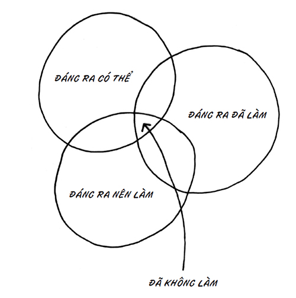

“Nghệ sĩ đích thực sẽ cho ra sản phẩm”
Khi nói những lời đó, Steve Jobs đang khiêu khích một kỹ sư cứng đầu không chịu bỏ qua dòng code nào đó. Nhưng câu châm ngôn ngắn gọn này còn sâu sắc hơn thế. Nhà thơ Bruce Ario từng nói: “Sáng tạo là bản năng sản sinh.”
Và đó là nghệ thuật mà chúng ta quan tâm.
Andy Hertzfeld, một trong những người khai sinh ra máy tính Mac, đã góp lời trong cuốn nhật ký ghi lại quá trình ra mắt chiếc Mac đầu tiên, chiếc máy tính đã thay đổi tất cả. Ông viết: “Mặt trời đã mọc và nhóm phần mềm cuối cùng đã bắt đầu giải tán, về nhà để gục xuống giường. Chúng tôi không biết liệu mình đã xong việc hay chưa, và cảm giác rất lạ khi không có gì để làm sau khi vất vả một thời gian dài. Thay vì về nhà, tôi và Donn Denman ngồi trên trường kỷ tại sảnh trong trạng thái mụ mị, quan sát các nhân viên kế toán và marketing lần lượt vào làm lúc khoảng 7 giờ 30 phút. Chúng tôi hẳn là một cảnh tượng kỳ thú; mọi người dám nói rằng chúng tôi đã ở đó cả đêm (thực ra, đã ba ngày rồi tôi chưa về nhà hoặc tắm rửa).” Vào thời khắc đó, Andy cảm thấy ông như một nghệ sĩ. Ông đã cho ra sản phẩm.
Người nghệ sĩ không suy nghĩ ngoài khuôn khổ, vì bên ngoài khuôn khổ chỉ có khoảng không trống rỗng. Bên ngoài khuôn khổ cũng không có nguyên tắc, và hiện thực nào. Bạn chẳng có gì để tương tác hay chống lại. Nếu dự định làm điều gì đó ngoài khuôn khổ (như thiết kế cỗ máy thời gian hay dùng ni-tơ lỏng để đóng băng Thác Niagara), bạn sẽ không bao giờ có thể tạo nên công trình nghệ thuật thực sự. Bạn không thể ra sản phẩm khi vượt ngoài khuôn khổ quá xa.
Người nghệ sĩ suy nghĩ ở rìa khuôn khổ, vì đó là nơi họ hoàn thành việc của mình. Đó là nơi có khán giả, có sẵn phương tiện sản xuất, và là nơi bạn có thể tạo sức ảnh hưởng.
Cho ra sản phẩm không phải là tập trung sản xuất một kiệt tác (dù mọi kiệt tác đều thành sản phẩm). Tôi đã xuất bản hơn trăm cuốn sách (đa số đều không bán tốt), nhưng nếu không làm thế, tôi đã chẳng có cơ hội viết cuốn này. Picasso cũng vẽ hơn nghìn bức tranh, và có lẽ bạn sẽ kể tên được chừng ba bức.
Như chúng ta sẽ thấy, thiếu sót lớn nhất trong xã hội chúng ta chính là bản năng sản sinh. Để sáng tạo giải pháp và nhanh chóng bán chúng ra ngoài. Để chạm đến tính nhân bản bên trong và kết nối với những con người trên thị trường.
Mâu thuẫn giữa việc cho ra sản phẩm và thay đổi thế giới
Đôi khi, việc cho ra sản phẩm tạo cảm giác như sự thỏa hiệp. Bạn bắt đầu tạo nên một thay đổi lớn lao, sáng tạo thứ nghệ thuật ý nghĩa và thực hiện công trình tuyệt vời nhất. Thế rồi hạn chót ập đến và bạn phải cắt giảm nó. Việc cho ra sản phẩm có quan trọng đến thế không?
Tôi nghĩ là có. Tôi nghĩ nguyên tắc cho ra sản phẩm là tối cần thiết cho hành trình dài hạn để trở thành nhân tố không thể thiếu. Trong khi một số nghệ sĩ xoay xở làm việc hàng năm trời, hàng chục năm trời và thực sự cho ra đời thứ gì đó quan trọng, thì chúng ta lại thường chứng kiến biết bao giấc mơ nghệ thuật tan vỡ vì sự phản kháng. Chúng ta chịu thua nỗi sợ hãi, và nghệ thuật của ta kết thúc trong xó xỉnh nào đó mà chẳng ai thấy được.
Khi bạn bắt đầu vận dụng nguyên tắc cho ra sản phẩm, công trình của bạn sẽ có vẻ lung lay. Hiển nhiên, bạn sẽ cần thêm một giờ, một ngày hoặc một tuần để “đánh bóng” thứ gì đó. Nhưng theo thời gian – thực ra là khá nhanh – bạn sẽ nhận thấy việc cho ra sản phẩm đã trở thành một phần của nghệ thuật, và nó khiến mọi thứ trở nên hiệu quả. Saturday Night Live (tạm dịch: Trực tiếp đêm thứ Bảy) luôn được phát sóng mỗi tuần, dù sẵn sàng hay không. Đây là chương trình trực tiếp, và phát sóng vào thứ Bảy. Không ai giở trò xung quanh việc cho ra sản phẩm cả. Không phát lại, không tạm dừng, không trì hoãn. Tất nhiên, đôi khi chương trình cũng gặp trục trặc, nhưng xét toàn diện, chính việc cho ra sản phẩm (được khẳng định ngay ở tên chương trình) thực sự đã giúp chương trình chạy tốt.
Không cho ra sản phẩm – nhân danh mục tiêu thay đổi thế giới của bạn – thường là triệu chứng của sự phản kháng. Hãy tự khiêu khích, cho ra sản phẩm rồi hẵng thay đổi thế giới.
Cho ra sản phẩm có ý nghĩa gì?
Mục đích duy nhất để bắt đầu là kết thúc, và tuy những dự án chúng ta thực hiện không bao giờ thực sự kết thúc, chúng ta vẫn phải bán được chúng. Cho ra sản phẩm chính là nhấn nút Đăng trên trang blog của bạn, trình chiếu bài thuyết trình cho đội ngũ bán hàng, trả lời điện thoại, bán bánh muffin và gửi các nguồn tham khảo. Cho ra sản phẩm là sự cọ xát giữa công trình của bạn với thế giới bên ngoài. Người Pháp hay đề cập đến esprit d’escalier, một sự đáp trả khôn ngoan mà bạn chỉ nghĩ đến vài phút sau khi thời khắc quan trọng trôi qua. Đó là vốn hiểu biết không “bán kịp”, và nó chẳng mấy đáng giá.
Đưa sản phẩm ra ngoài thị trường, cho ra sản phẩm đều đặn mà không cảm thấy phiền nhiễu, gấp gáp hay sợ hãi – đó là một kỹ năng hiếm có, giúp bạn trở thành nhân tố không thể thay thế.
Vì sao việc cho ra sản phẩm lại khó đến thế? Tôi cho là vì hai thách thức và một nguyên nhân:
Các thách thức:
---❊ ❖ ❊---
Đòn roi;
Phối hợp.
---❊ ❖ ❊---
Và nguyên nhân: Sự kháng cự.
Đòn roi
Steve McConnell đã giúp chúng ta hiểu việc dùng đòn roi sai thời điểm có thể hủy hoại mọi dự án phần mềm thất bại. Thực tế, vấn đề vượt xa bản thân phần mềm rất nhiều.
Bất kỳ dự án nào đáng làm đều bao hàm phát kiến, nguồn cảm hứng và một chút gì đó “hoàn thành”. Theo truyền thống, chúng ta sẽ bắt đầu tô điểm, bổ sung ngày càng nhiều chi tiết khi tiến gần đến hạn ra sản phẩm. Và càng đến gần ngày đó, “đòn roi” càng xuất hiện nhiều. Đòn roi bề ngoài là những màn động não và vặn vẹo hiệu quả mà chúng ta dành cho một dự án khi nó hình thành. Đòn roi có thể đồng nghĩa với việc thay đổi giao diện người dùng hoặc viết lại đoạn giới thiệu. Đôi khi đòn roi chỉ là một câu hỏi vặn, nhưng lúc khác lại cần đến sự mổ xẻ hệ trọng.
Đòn roi rất cần thiết. Nhưng câu hỏi là: Khi nào nên dùng đòn roi?
Trong một sự án nghiệp dư điển hình, mọi đòn roi đều xuất hiện gần thời điểm cuối. Chúng ta càng gần hạn ra sản phẩm bao nhiêu, thì sẽ càng có nhiều người tham gia, càng có nhiều cuộc họp, và khả năng CEO muốn dự phần cũng cao hơn. Và sao lại không chứ? Sao phải tham gia từ sớm khi bạn không thể thấy thứ gì đã hoàn thành, và công trình của bạn đằng nào cũng có thể bị làm lại?
Ý nghĩa của việc để mọi người tham gia từ sớm rất đơn giản: Nếu dùng đòn roi trễ, bạn sẽ không ra được sản phẩm. Dùng đòn roi trễ và bạn sẽ bày ra toàn lỗi. Những nhà sáng tạo chuyên nghiệp luôn dùng đòn roi từ sớm. Dự án càng gần hoàn thành, càng ít người được chứng kiến nó và càng ít thay đổi được chấp nhận.
Mọi dự án phần mềm trễ hạn mục tiêu (hay toàn bộ các dự án phần mềm) đều là nạn nhân của việc dùng đòn roi muộn. Các nhà sáng tạo không có cách xử phạt để buộc mọi đòn roi xuất hiện ngay từ đầu. Họ đành trở thành nạn nhân của sự phản kháng.
Phối hợp
Đó là những cái bắt tay.
Bạn cần bao nhiêu cái bắt tay để giới thiệu ba người với nhau? Chỉ ba cái thôi. Ishita, đây là Susan. Susan, đây là Clay. Clay, đây là Ishita.
Bốn người sẽ cần gấp đôi số đó. Sáu cái bắt tay.
Còn năm người thì sao? Những 10 cái.
Việc phối hợp các nhóm người sẽ trở nên khó khăn hơn gấp bội khi nhóm đó lớn hơn. Và đối với những dự án quan trọng trong tổ chức có nguy cơ tổn thất, đội nhóm sẽ buộc phải mở rộng hơn. Những ai đánh cược điều gì đó (và chúng ta đều tin rằng mình đang đánh cược điều gì đó) sẽ muốn tham gia vào các dự án thực sự tốt, chủ yếu vì họ sợ tất cả những người khác sẽ làm hỏng chuyện và họ bị đổ lỗi.
Thế nên, các dự án cứ đình lại dù chịu “đòn roi”. Lý do khiến các công ty khởi nghiệp hầu như luôn đánh bại các công ty lớn khi đổ xô vào thị trường đơn giản là: Công ty khởi nghiệp có ít người để phối hợp hơn, ít đòn roi hơn và mật độ nòng cốt cũng dày hơn. Họ không thể đáp ứng bất kỳ điều gì khác và có ít thứ để mất hơn.
Có hai giải pháp cho vấn đề phối hợp, và đều khiến mọi người không thoải mái, vì chúng đều thách thức sự phản kháng của chúng ta:
Không ngừng hạn chế số lượng người được phép dùng đòn roi. Điều đó đồng nghĩa với việc bạn cần các thủ tục chính thức để loại bớt người, ngay cả người nắm quyền có thiện ý. Và bạn cần giữ bí mật. Nếu bạn muốn lựa chọn giữa việc bị bất ngờ (và chứng kiến một dự án xuất sắc hoàn thành đúng hạn) với được tạo ảnh hưởng (và tham gia vào quá trình ra mắt chậm trễ một dự án tầm thường), bạn sẽ muốn sao? Bạn phải chọn một trong hai.
Chỉ định một người (nòng cốt) điều hành dự án. Không đồng điều hành, không lãnh đạo “lực lượng đặc biệt” hay có chân trong hội đồng quản trị. Một người, chỉ một người điều hành dự án. Tên cô ấy gắn với nó. Cô ấy ra mọi quyết định.
Hãy run sợ từ sớm chứ đừng quá muộn. Hãy can đảm sớm chứ đừng muộn. Hãy dùng đòn roi từ bây giờ, chứ đừng chần chừ. Dùng đòn roi muộn sẽ rất tốn kém.
Sự phản kháng: Não bò sát của bạn
Não bò sát luôn đói ăn, sợ sệt, tức giận và hứng tình.
Não bò sát chỉ muốn ăn và được an toàn.
Não bò sát sẽ chiến đấu (đến chết) nếu phải làm thế, nhưng thà bỏ chạy còn hơn. Nó thích kiểu huyết thù và dễ dàng nổi giận.
Não bò sát quan tâm đến điều tất cả mọi người nghĩ đến, vì vị thế trong “bộ lạc” tối quan trọng cho sự tồn tại của nó.
Một con sóc sẽ chạy quanh để tìm hạt, trốn tránh cáo, lắng nghe động tĩnh của thú săn mồi và tìm những con sóc khác. Con sóc làm thế vì đó là tất cả những gì nó có thể làm. Mọi con sóc đều có não bò sát.
Đáp án chính xác cho câu hỏi “Vì sao con gà băng qua đường?” là “Vì não bò sát của nó bảo thế”. Tính hoang dã của các loài động vật hoang dã xuất phát từ bộ não bò sát – bộ não duy nhất mà chúng có.
Não bò sát không chỉ là một khái niệm. Nó có thật, và nằm ngay trên cùng cột sống của chúng ta, đấu tranh vì sự tồn vong của chúng ta. Nhưng tất nhiên, tồn tại và thành công không phải cùng một thứ.
Não bò sát là nguyên nhân khiến bạn sợ hãi, khiến bạn không thể làm mọi thứ nghệ thuật trong khả năng, khiến bạn không cho ra được sản phẩm khi có thể. Não bò sát chính là nguồn gốc của sự phản kháng.
Thần lực và sự phản kháng
Tâm trí của bạn, thứ khiến bạn phát điên và trở nên đặc biệt, gồm hai phần tách biệt, deamon (thần lực) và sự phản kháng.
Thần lực là nguồn gốc của những ý tưởng vĩ đại, tri thức đột phá, tính hào phóng, tình yêu, sự gắn kết và lòng tốt.
Sự phản kháng dành toàn bộ thời gian để lăng mạ thế giới vì thần lực của chúng ta. Sự phản kháng tồn tại bên trong não bò sát.
Tôi lần đầu nghe đến thần lực khi Elizabeth Gilbert 30 kể về thần lực của cô trên diễn đàn TED 31 (bạn có thể xem video đó trên trang www.ted.org). Sau đó, tôi đọc đến nguồn bài phát biểu của cô: những điều rút ra từ tác phẩm The Gift (tạm dịch: Món quà) của Lewis Hyde.
30
Nữ nhà văn, tác giả, tiểu thuyết gia, nhà phê bình văn học người Mỹ. Cô được biết đến nhiều nhất với tác phẩm theo dạng bút ký Eat, Pray, Love (Ăn, Cầu nguyện và yêu) năm 2006. (ND
)
31
Tổ chức truyền thông đại chúng chuyên đăng tải các bài phát biểu miễn phí theo tôn chỉ: “Những ý tưởng đáng lan truyền.” Ban đầu, nội dung của TED nhấn mạnh vào công nghệ và thiết kế, nhưng rồi đã mở rộng trọng tâm bao gồm các cuộc thảo luận về nhiều chủ đề khoa học, văn hóa và học thuật. (ND)
Deamon là thuật ngữ tiếng Hy Lạp (tiếng La Mã gọi là “thiên tài”). Người Hy Lạp tin rằng thần lực là một thực thể riêng biệt có trong mỗi chúng ta. Thiên tài trong chúng ta luôn vật lộn để thể hiện mình thông qua hội họa, văn chương hoặc một nỗ lực nào đó. Khi thiên tài đó cảm thấy mình được thể hiện, điều tuyệt vời sẽ xảy ra. Nếu không, có thể nói rằng bạn đã không gặp may.
Elizabeth cảnh báo chúng ta rằng cuộc đời của một nhà văn có thể kết thúc như “tàn tích của những giấc mơ tan vỡ, khi miệng bạn chỉ còn vị đắng của tàn tro thất bại”. Cô tự hỏi vì sao những dự án mạo hiểm sáng tạo lại đe dọa sức khỏe tinh thần của chúng ta. Vì sao chướng ngại lại đặt ra cho nhà văn thay vì kỹ sư hóa học? Dường như chất nghệ thuật luôn mang đến phiền não. Sự phiền não này là hệ quả của sự xung đột giữa thần lực và sự phản kháng. Xã hội thôi thúc nghệ sĩ trở thành thiên tài, nhưng lại phản đối việc khuyến khích các nghệ sĩ cho phép chất thiên tài trong họ nở rộ. Quả là những nhiệm vụ trái khoáy.
Phiền não ư? Hẳn là thế. Đó là mâu thuẫn giữa ý tưởng của bạn với thế giới bên ngoài. Quan trọng hơn, đó là hố sâu ngăn cách giữa phần bản ngã muốn an toàn và vô hình với thần lực của bạn – thứ đòi được cất tiếng với cả thế giới.
Mỗi khi bạn nhận ra mình đang tuân theo chỉ dẫn thay vì viết nên chỉ dẫn, tức là bạn đang trốn tránh nỗi phiền não và đầu hàng sự phản kháng.
Người nghệ sĩ viết ra điều thần lực mách bảo. Theo lời Elizabeth: “Tôi ra mặt cho phần việc mình đảm đương.” Thần lực chính là người nghệ sĩ trong bạn; nhiệm vụ của bạn chỉ là cho phép nó làm việc của mình.
Chuyện này khó khăn hơn chúng ta tưởng. Trong cuốn sách kinh điển The War of Art (tạm dịch: Cuộc chiến nghệ thuật), tác giả Steven Pressfield đã gọi tên sự bất lực trong việc giải phóng thần lực trong chúng ta là “sự phản kháng”.
Pressfield cho rằng kẻ thù của thần lực là sự phản kháng. Bộ não bò sát, bộ phận mà thần lực không thể điều khiển, luôn hoạt động nhằm khiến bạn im miệng, ngồi yên và làm việc (thường nhật) của mình. Nó sẽ vẽ ra những câu chuyện, bệnh tật, chuyện khẩn cấp và đủ trò phân tâm hòng kìm nén chất thiên tài. Sự phản kháng cũng sợ hãi. Nó sợ điều sẽ xảy ra với bạn (và với nó) nếu ý tưởng thoát ra ngoài, nếu có người nhận được món quà của bạn, và nếu điều kỳ diệu xảy đến.
Bạn biết sự phản kháng có tồn tại. Bạn đã cảm thấy nó. Có lẽ bạn chưa đặt tên cho nó, hoặc chưa nhận thức hết mọi triệu chứng, nhưng bạn có thể chắc chắn đó là một phần trong bạn.
Tôi đã chứng kiến nó hủy hoại những cá nhân, đội ngũ và doanh nghiệp. Sự phản kháng rất đáng khinh và tinh ranh. Nó gây ra bệnh tật, sự trì hoãn và đặc biệt nhất là sự hợp lý hóa. Hợp lý hóa rất, rất nhiều, một điều mà bạn có thể đang trải nghiệm ngay lúc này.
Sự phản kháng đã tồn tại hàng triệu năm và não bò sát cũng sẽ không dễ dàng chịu thua. Tuy lớp vỏ não mới (nơi thần lực trú ngụ) xuất hiện trễ hơn nhiều trên phương diện tiến hóa, nhưng nó không hề mạnh mẽ hơn. Chỉ cần có cơ hội, não bò sát sẽ “tắt nguồn” bạn và sự phản kháng sẽ chiến thắng.
Sự phản kháng suýt nữa đã đánh bại Elizabeth Gilbert. Sau khi bán được hàng nghìn bản của cuốn sách Ăn, cầu nguyện và yêu, sự phản kháng đã lo sợ về điều mà cuốn sách kế tiếp có thể gây ra cho sự nghiệp của cô. Cô cho biết: “Mọi người đối xử với tôi như thể tôi đã hết thời. Bạn có sợ rằng mình sẽ không bao giờ quay lại thời đỉnh cao?” Não bò sát rất ồn ào và tức giận, thế rồi nó bắt đầu đánh bại cô.
Vừa hay, Elizabeth đã viết xong cuốn sách kế tiếp và mang nó đến tiệm photo để in bản nháp đầu tiên. Cô đứng đọc nó ngay ở tiệm. “Nó khác với những lo lắng và bất an mà bạn cảm nhận khi viết thứ gì đó”, cô kể lại. “Nó còn không đáng bàn tới.” Não bò sát đã thắng. Elizabeth vứt bỏ cả cuốn sách, xé tan nó, chôn vùi nó, trễ hạn nộp và bắt đầu lại tất cả. Công sức hơn một năm trời bỗng mất sạch.
May mắn thay, cô đã suôn sẻ ra mắt cuốn sách mới. Cô đã kiên trì và tìm ra một cách khác để đánh bại não bò sát. Nhưng rõ ràng, bất kể bạn đang làm công việc sáng tạo nào, thành công hay được tung hô ra sao, não bò sát cũng sẽ truy lùng và có thể phát hiện ra bạn. Điều xảy ra tiếp theo sẽ tùy thuộc ở bạn.
Sự phản kháng tiến hóa ra sao?
Thực ra, nó là thứ xuất hiện đầu tiên.
Nó là bộ phận đầu tiên trong não bạn, là phần xuất hiện đầu tiên khi chúng ta còn nằm trong bụng mẹ, là phần đã tồn tại từ cả triệu năm trước – não bò sát. Não bò sát chịu trách nhiệm về phản ứng khi gặp nguy hiểm, sự tức giận và sự sống còn. Đó từng là tất cả những gì chúng ta cần, và thậm chí ngày nay, não bò sát vẫn nắm quyền chi phối trong trường hợp khẩn cấp.
Có một số phần nhỏ trong não bạn nằm gần cuối tủy sống chịu trách nhiệm về sự sống còn cũng như những đặc điểm hoang dã khác. Toàn bộ cấu trúc này gọi là các hạch nền (basal ganglia), và có hai khối hình hạt hạnh nhân như thế trong não của mỗi người. Các nhà khoa học gọi chúng là hạch hạnh nhân, và bộ não bé nhỏ này dường như sẽ chi phối mỗi khi bạn tức giận, lo sợ, thích thú, đói bụng hoặc tìm cách trả thù.
Não bộ của chúng ta chỉ vừa mới tiến hóa để cho phép những suy nghĩ lớn, tính hào phóng, lời nói, ý thức và – phải – nghệ thuật xuất hiện. Khi quan sát hình ảnh bộ não, bạn sẽ thấy bộ phận mới này: lớp vỏ não mới. Đó là phần màu xám có nếp nhăn phía ngoài. Nó lớn, nhưng lại yếu ớt. Khi đối mặt với sự phản kháng kinh khủng từ hạch hạnh nhân, phần còn lại của não bộ đành bất lực. Nó chết đứng và đầu hàng. Não bò sát liền chiếm quyền kiểm soát và cố gắng tự bảo vệ mình.
Như vậy, thách thức chính là tạo ra một môi trường nơi não bò sát chìm vào giấc ngủ. Vì không thể đánh bại nó, nên bạn phải dụ dỗ nó. Một phần não bộ bận tâm đến sự tồn vong, cơn giận và dục vọng. Phần còn lại kiến tạo nên nền văn minh.
Hình ảnh này vừa ẩn dụ, vừa có cơ sở sinh học. Não bò sát tồn tại là để giúp bạn sống sót; phần còn lại của não bộ đơn giản sẽ biến bạn thành một thành viên vui vẻ, thành công và gắn kết trong xã hội.
Do vậy, hai phần này luôn đấu tranh với nhau. Và bao giờ cũng thế, khi rơi vào trạng thái báo động, não bò sát luôn thắng, trừ khi bạn hình thành các thói quen mới và khuynh hướng tốt hơn – những khuynh hướng kiềm chế não bò sát.
(Sự tiến hóa của não bộ có thể tạo ra nền văn minh)
Tôi xin lướt nhanh qua một bài sinh học cực kỳ đơn giản: Dưới đây là bốn hệ thống chính yếu trong não bộ của bạn. (Xin lưu ý: “hệ thống” không chỉ là một bẫy khái niệm để chúng ta hiểu về những điều diễn ra trái với sự thật sinh học hoặc suy nghĩ tự phát.) Từ trên xuống dưới danh sách, mỗi hệ thống sẽ trở nên văn minh hơn, nhưng cũng yếu ớt hơn:
---❊ ❖ ❊---
Hành não: hít thở và các chức năng sống còn vô thức khác;
Hệ viền: não bò sát, bao gồm sự giận dữ, trả thù, tình dục và nỗi sợ hãi;
Tiểu não: phối hợp và điều khiển cơ vận động;
Đại não: bộ phận ra đời sau cùng và phức tạp nhất của não bộ, và luôn chịu sự chi phối của ba bộ phận còn lại.
---❊ ❖ ❊---
Đại não bao gồm bốn thùy, và chúng ta nên tự hào về chức năng của chúng:
Thùy trán: lý luận, lập kế hoạch, các bộ phận nói, vận động, giải quyết vấn đề;
Thùy đỉnh: vận động, định hướng, nhận biết, tiếp nhận kích thích;
Thùy chẩm: thị lực (phần vỏ não trước trán tối quan trọng nhưng thường bị xem nhẹ và đánh giá thấp, hợp nhất não bò sát với bộ não duy lý của bạn);
Thùy thái dương: thính lực, trí nhớ và lời nói.
Bạn không thể lên tiếng khi bị đuối nước. Bạn không thể yêu khi vừa thất tình. Bạn cũng không thể vừa viết một bài thơ, vừa nôn mửa khi chơi trò tàu lượn siêu tốc.
Phép ẩn dụ của tôi giống như sau: Hệ thống não nào càng lâu đời trên thước đo tiến hóa (và càng gần với hành não), hệ thống đó càng có sức mạnh ức chế những hệ non trẻ hơn. Và não bò sát trong hệ viền chính là ví dụ hùng hồn nhất cho phép ẩn dụ này. Bạn hiếm khi lên cơn đau tim (tôi hy vọng thế) và có thể không bị choáng đến mức gục xuống, nhưng hạch hạnh nhân thường sẽ ức chế mọi hoạt động văn minh trong não bộ và chiếm quyền kiểm soát, khiến bạn rơi vào trạng thái tê cứng.
Hơn 50 năm trước, bác sĩ kiêm nhà sinh học thần kinh Paul MacLean đã tiến hành một nghiên cứu tại Đại học Yale và Viện Sức khỏe Tinh thần Quốc gia. Ông trình bày điều mà ông gọi là “thuyết ba ngôi”, từ đó dẫn đến tư duy phía sau não bò sát. Kết hợp nghiên cứu này với công trình của Antonio Damasio nhằm thấu hiểu vai trò của vỏ não trước trán ổ mắt trong việc hợp nhất não bò sát với các phần não duy lý hơn, bạn có thể thấy được sự tương đấu và tương hỗ bất tận mà hai phần não bộ này tạo ra.
Con người có hai bộ não
Đó chính là tôi. Và hiển nhiên là cả bạn nữa.
Vì sao mọi người lại làm những việc tự hủy hoại mình? Vì sao chúng ta làm công việc bàn giấy cả tuần nhưng chẳng bao giờ lưu lại hay giữ bản dự phòng? Vì sao các nhà khởi nghiệp tiến gần thành công đến thế, nhưng lại hủy hoại toàn bộ công sức của họ chỉ vì một tích tắc sợ hãi?
Chúng ta làm hỏng việc chính là vì “chúng ta”. Có đến hai chứ không chỉ một giọng nói trong đầu chúng ta, và một trong hai ở gần cột sống cũng như những hóa chất sinh ra cảm xúc hơn giọng còn lại. Thế nên, nó thường xuyên chi phối.
Các nhà sinh học thần kinh chuyên nghiên cứu các chứng rối loạn não đã khám phá ra những động thái đáng kinh ngạc. Có trường hợp một phụ nữ mắc chứng mất trí nhớ ngắn hạn nghiêm trọng. Tất cả những điều xảy ra trước 5 phút trước đều như chưa từng có. Cô biết tên mình và quá khứ rất lâu trước kia, nhưng những chuyện gần đây thì không (tương tự như cốt truyện của bộ phim xuất sắc Memento).
Mỗi ngày, cô lại đến gặp bác sĩ. Ông sẽ bắt tay cô, giới thiệu lại bản thân và họ bắt đầu lại từ đầu. Một ngày nọ, nhân một thí nghiệm khá phi đạo đức, ông đã giấu một chiếc đinh mũ trong tay. Và khi bắt tay, cô đã bị nhói. Ông giải thích với cô mình đã làm gì, và dĩ nhiên, cô quên bẵng tất cả chỉ 5 phút sau đó.
Nhưng đến ngày hôm sau, khi vị bác sĩ chìa tay ra, cô đã do dự. Sao cô biết được về chiếc đinh mũ? Trí nhớ ngắn hạn của cô đã xóa sạch nó rồi. Cô cũng không hề giả vờ. Ấy thế mà, cô vẫn ghi nhớ đủ để tránh được cơn đau.
Đấy là do hạch hạnh nhân của cô hoạt động. Nó có bộ nhớ riêng và hệ thống sinh tồn có sẵn. Não bò sát cứ chờ đợi và nhảy vào hành động mỗi khi các nhu cầu sống còn bị đe dọa. Và một khi nó đã thức giấc, thì phần não còn lại của chúng ta sẽ có rất ít cơ may chi phối, đặc biệt nếu chúng ta chưa từng được rèn luyện qua những sự việc này.
Và còn có cả mâu thuẫn giữa điều chúng ta hiện cảm thấy ổn bên trong so với cảm xúc ta nên có. Nó giải thích vì sao một người bị ung thư cổ họng cứ mãi hút thuốc, hoặc một người bị béo phì vẫn cứ đòi ăn “chỉ một chiếc bánh chiên nữa thôi” dù họ hiểu biết hơn thế. Khi đối diện với lòng tham và nỗi sợ của hạch hạnh nhân, những kẻ non nớt đành phải đầu hàng.
Thế còn sự phản kháng trong bán hàng? Vì sao một số nhân viên bán hàng dù dành ra hàng năm trời rèn luyện, hàng giờ nỗ lực và hàng nghìn đô-la chi phí đi lại nhưng vẫn phải ra đi mà không tạo ra doanh số, trong khi những người khác lao thẳng đến bước cuối cùng (sinh lợi) và bước ra với một đơn đặt hàng? Một lần nữa, vẫn là do hai bộ não; hạch hạnh nhân đã bỏ chạy ngay thời khắc nó cảm thấy bị đe dọa.
Còn các quản lý yếu kém thì sao? Vì sao có quá nhiều vị sếp e ngại cách phê bình hữu ích hoặc lãnh đạo đúng quyền hạn? Vì sao họ lại dễ dàng náu mình sau cánh cửa văn phòng hoặc chức vụ thay vì nhìn thẳng vào mắt mọi người và tạo sự khác biệt? Cũng cùng đáp án đó. Hạch hạnh nhân không chịu nhìn vào mắt mọi người, vì việc đó sẽ đe dọa hoặc phơi bày nó trước rủi ro.
Và hạn chót? Chắc hẳn bạn có quen biết một người luôn đến muộn. Một người không thể đem lại bất kỳ thứ giá trị nào trừ khi họ trì hoãn lâu đến mức họ phải cần đến sự gấp rút, khẩn cấp đòi hỏi nỗ lực phi thường và adrenaline mới hoàn thành được. Đây không phải hành vi hiệu quả hay đáng tin cậy, nhưng họ vẫn cứ làm. Nguyên nhân rất đơn giản: Họ không thể vượt qua nỗi sợ hoàn thành thường gặp trừ khi tạo ra một nỗi sợ lớn hơn – sợ thất bại hoàn toàn. Não bò sát rất bốc đồng, nhưng đối với những người này, nó còn có khả năng lựa chọn nỗi sợ lớn hơn và tránh điều đó.
Thực ra, nếu chúng ta duyệt qua danh sách những hành vi rất được xem trọng vì sự hiếm gặp của chúng, thì hầu như tất cả đều liên quan đến việc kéo bộ não có ý thức và rộng lượng vào công việc, thay vì chiều theo sự phản ánh nỗi sợ, sự trả thù và chinh phục của não bò sát.
Giao tiếp bằng mắt và não bò sát
Vườn thú Rotterdam hiện đang phát một loại kính mắt đặc biệt cho khách tham quan khu vực khỉ đột.
Loại kính này cùng kiểu với kính 3D để xem phim, ngoại trừ việc chúng không thay đổi những gì bạn thấy, mà thay đổi thứ con khỉ đột nhìn thấy. Chúng sẽ nhìn thấy hình ảnh của chính chúng trên kính của bạn.
Bằng cách này, khi đến gần lũ khỉ, bạn sẽ không có vẻ như giao tiếp bằng mắt với chúng. Đó là hành động đe dọa. Nó sẽ làm lũ khỉ khiếp sợ và khiến chúng tấn công.
Chỉ riêng sự giao tiếp bằng mắt cũng đủ để ném não bò sát của bạn vào trạng thái bối rối. Hãy hình dung sẽ đáng sợ thế nào nếu bạn phải tiến hành điều gì đó khiến mình bị chú ý, hoặc bị chỉ trích.
Có một nguyên nhân khiến việc phát biểu trước đám đông trở thành nỗi sợ số một của đa số mọi người. Phát biểu trước đám đông là điều tồi tệ nhất mà não bò sát có thể tưởng tượng ra.
Rất khó nói lý lẽ với não bò sát
Thật khó nói cho ra lẽ với kẻ nghiện rượu về chứng nghiện ngập của anh ta. Thật khó khiến một thiếu niên hiểu được những hậu quả từ hành động bột phát của cậu ta. Và hầu như không thể nói sao cho một CEO đang tức giận kìm lại cơn phẫn nộ đầy thù hằn. Năm ngoái, một CEO mà tôi biết đang trình bày sản phẩm thử nghiệm với một nhà đầu tư. Trong một phần của bản thử nghiệm, anh nhấp chuột vào trang web của đối tác. Và ngay giữa thanh thiên bạch nhật, trước mặt các nhà đầu tư là một bức ảnh thô tục không-an-toàn-để-xem-trong-giờ-làm-việc.
Vị CEO lập tức trở mặt. Suốt ba ngày sau, anh dành hầu như toàn bộ thời gian và tiền bạc để tránh bàn thảo hợp đồng với đối tác đó. Anh huy động mọi lực lượng. Không thỏa hiệp gì cả! Hủy tất!
Quả là lãng phí. Anh đã tiêu tốn của công ty hàng núi thời gian, tiền bạc và danh tiếng chỉ để khắc phục một vấn đề quá muộn để sửa chữa.
Não bò sát không nghe và cũng chẳng quan tâm.
Hy vọng duy nhất của giống loài chúng ta chính là phần còn lại của não bộ – phần văn minh trong nó – sẽ quan tâm sâu sắc đến những hệ quả tích cực và sắp xếp suy nghĩ nhằm tránh não bò sát, cũng như trông cậy vào các hệ thống giúp hạn chế sức mạnh của sự phản kháng.
Sự phản kháng trong công việc
“Đấy, tôi đã nói với anh là nó không hiệu quả mà.”
Bạn trình bày ý tưởng tuyệt vời của mình và mọi người ghét nó. Họ giễu cợt, đe dọa và bảo bạn biến đi.
Tiềm thức của bạn liền lên tiếng. Nó nói kiểu như: “Mi đáng lẽ nên nghe ta. Mi sẽ làm hỏng chuyện thôi”, hoặc: “Ta biết mi đáng ra không nên làm thế.”
Vậy chính xác “bạn” là ai? Và giọng nói này đang nói với ai?
Giọng nói trong đầu bạn đã bộc lộ sự phản kháng. Nó đang cố gắng dạy cho “thần lực” một bài học, và động viên nó hãy cẩn thận hơn vào lần sau. Não bò sát ghét thiên tài trong bạn và tìm cách vùi dập nó. Khi bạn nghe cuộc độc thoại này, hãy lờ nó đi. Hãy nhớ rằng nó đóng vai trò là bằng chứng của sự phản kháng, và hãy tự đề phòng để tích cực tránh nó hơn nữa.
Khi não bò sát đến trường
Tất nhiên, sự phản kháng thích trường học. Nếu trường học chỉ là sự vâng lời, thì bạn có thể yên ổn với suy nghĩ rằng càng vâng lời càng tốt, và sự phản kháng chịu đựng điều đó. Nếu trường học là hòa nhập, thì sự phản kháng sẽ vui vẻ đồng tình. Nếu trường học nghĩa là hoãn lại ngày mà bạn phải đứng ra trước cả thế giới và tự đặt mình vào rủi ro, thì sự phản kháng sẽ muốn sống ở đó mãi.
Chính não bò sát đã bảo bạn rằng bạn không đủ tư cách, rằng bằng cấp của bạn không đủ cao, rằng bạn theo học một ngôi trường không đủ tốt. Cũng chính não bò sát bảo bạn đừng nộp hồ sơ vào một trường xuất sắc, vì bạn không xứng đáng theo học nó. Và chính não bò sát là thứ quan tâm sâu sắc đến điểm số, chẳng hề đếm xỉa đến nghệ thuật, tài lãnh đạo hay sự kết nối.
Khi não bò sát đi làm
Bạn làm việc với những người hoàn toàn dung thứ cho sự phản kháng. Họ ủng hộ kẻ ác bằng cách trở thành người bênh vực cho hắn trong các cuộc họp. Họ tuân thủ sách nội quy, kể cả những phần mà bạn không biết đến. Họ yêu thích những thứ từng hiệu quả và lo sợ những điều sắp đến.
Các trang web như lifehacker.com có đầy những công cụ tiết kiệm thời gian và nâng cao năng suất. Nhìn chung, các đồng nghiệp âu lo của bạn sẽ tránh những công cụ này, vì càng tạo năng suất cao hơn, họ sẽ càng tiến gần đến khả năng phải làm điều gì đó, phải cho ra sản phẩm mới nào đó ngoài thị trường. Và ngạc nhiên thay, những người luôn bận rộn ghi chép đầy sổ các mẹo vặt và công việc cũng lo sợ như thế. Tỏ ra bận rộn không đồng nghĩa với đấu tranh với sự phản kháng. Đạt năng suất cao trong công việc của người khác không giống với việc tự vạch ra bản đồ cho mình.
Cái khó của thua cuộc
Nguyên nhân khiến sự phản kháng cứ khăng khăng giữ chân và ngăn bạn dốc hết trái tim, tâm hồn và tài nghệ cho công trình của mình đơn giản là vì: Bạn có thể thất bại.
Tất nhiên, bạn có thể. Thực ra, bạn sẽ thất bại. Hẳn không phải lúc nào cũng thế, nhưng sẽ nhiều hơn bạn mong muốn.
Và khi bạn thất bại, tiếp theo sẽ là gì?
JP, bạn tôi, vừa mất việc. Cô ngạc nhiên vì sau những gì mình làm, cô xứng đáng được thăng chức thay vì bị sa thải. Cô hoàn thành mọi việc mình phải làm, từng ngày một, và họ may mắn vì có cô. Thế nhưng, lũ ngu ấy vẫn sa thải cô.
Một số người sẽ xem đây là một cái tát, một vết cứa sâu vào tâm hồn họ, một thông điệp rằng tốt hơn họ nên lùi lại, đừng cố gắng nữa và bớt quan tâm đi.
Nhưng JP đã làm ngược lại. Đầu tiên, cô nhận ra họ đã có một quyết định tồi, chứ không phải cô đã có một công việc tồi (ý kiến hay). Và thứ hai, cô nhanh chóng hiểu ra nếu cô để sự phản kháng đứng dậy và cất tiếng: “Ta đã bảo mi mà”, thì cô sẽ đầu hàng. Đầu hàng trước sự phản kháng và bạn có thể không bao giờ gượng dậy nổi.
Những người thành công đạt được thành công chỉ nhờ một lẽ đơn giản: Họ suy nghĩ khác về thất bại.
Những người thành công học hỏi từ thất bại, nhưng họ học một bài học khác. Họ không học được rằng mình đáng ra không nên cố gắng ngay từ đầu, rằng họ luôn đúng còn thế giới luôn sai, và rằng họ là kẻ thua cuộc. Họ học được rằng các chiến thuật họ từng sử dụng không hiệu quả, hoặc người mà họ áp dụng các chiến thuật đó không đáp ứng được.
Bạn trở thành người thắng cuộc vì bạn giỏi thua cuộc. Cái khó của thua cuộc là bạn có thể cho phép điều đó tiếp thêm sức mạnh cho sự phản kháng, và bạn có lẽ tin rằng mình không xứng đáng chiến thắng, rằng – từ góc tối nhất của tâm hồn – bạn nên bỏ cuộc.
Xin đừng làm thế.
Tìm kiếm sự bất an
Thoát khỏi lối mòn để tìm kiếm những hoàn cảnh khó chịu là điều trái tự nhiên, nhưng lại rất cần thiết.
Sự phản kháng tìm kiếm sự thoải mái. Sự phản kháng muốn náu mình. Ở công sở, chúng dành hàng giờ (và hàng triệu đô-la) tìm kiếm một vị trí có thể phòng thủ, một vị thế trên thị trường, cùng một chức vụ mà chúng ta có thể cảm thấy an toàn. Các tập đoàn chứng kiến cổ phiếu của họ tăng vọt khi họ vạch ra được một ngách thị trường thuận lợi giúp sinh lời trong nhiều năm tới. Các giáo sư đại học thường chấp nhận làm nghề này vì sự thoải mái mà nhiệm kỳ giảng dạy mang lại. Các nhân viên bán hàng ưa dùng kịch bản có sẵn vì nó thoải mái hơn là thu hút khách hàng tiềm năng. Các vị sếp không muốn phản hồi trực tiếp và hữu ích cho nhân viên vì việc đó lập tức tạo cảm khác khó chịu.
Con đường dẫn đến sự thoải mái đã chật cứng người, và nó hiếm khi giúp bạn thoải mái thực sự. Mỉa mai thay, chính những ai tìm kiếm sự bất an lại có thể tạo sự khác biệt và tìm thấy nền tảng cho mình.
Hiển nhiên, chúng ta luôn phóng đại cảm giác khó chịu của bản thân. Một chỗ ngồi khó chịu trên chuyến bay dài sẽ bắt đầu tạo cảm giác như một vết thương hở. Sự phóng đại này thậm chí còn củng cố thêm cho khả năng sau: Nếu đón nhận sự bất an mà người khác e sợ, bạn rất có thể sẽ nhận lại những phần thưởng đích thực.
Sự bất an đem lại mối gắn kết và thay đổi. Bất an đồng nghĩa bạn đang làm điều gì đó mà người khác ít có khả năng làm, vì họ đang bận lẩn trốn trong vùng an toàn. Khi những hành động khó chịu của bạn dẫn đến thành công, tổ chức sẽ tưởng thưởng cho bạn và đưa bạn trở lại với lợi ích lớn hơn.
Phát triển kế hoạch B
Những người bạn và cố vấn có thiện chí không bao giờ ngần ngại chìa tay ra với các nghệ sĩ. Họ khuyên chúng ta hãy có kế hoạch dự phòng, một điều gì đó để trông cậy khi thứ nghệ thuật của bạn không tiến triển tốt.
Bạn có lẽ đã đoán được điều gì sẽ xảy ra khi bạn có một kế hoạch dự phòng xuất sắc: Sau cùng, bạn sẽ thỏa mãn với kế hoạch dự phòng. Ngay khi bạn nói: “Mình sẽ cố gắng hết sức” thay vì “Mình sẽ làm”, là bạn đã mở cửa cho não bò sát vào nhà.
Sự phản kháng luôn tuyệt vọng tìm cách hủy hoại nghệ thuật của bạn. Một kế hoạch dự phòng rạch ròi chính là sự hủy hoại đang chờ đợi xảy ra. Sao phải vượt qua điểm thử thách, sao phải mạo hiểm, sao phải đánh đổi tất cả khi đã có một phương án thoải mái thay thế? Những người đột phá thường chẳng còn gì để mất, và họ hầu như chẳng bao giờ có kế hoạch dự phòng.
Những ý tưởng hay đâu cả rồi?
Khi ai đó nói với tôi: “Tôi chẳng có ý tưởng nào hay… Tôi không giỏi việc đó”, tôi sẽ hỏi họ: “Thế bạn có ý tưởng tồi nào không?”
Trong 9 trên 10 trường hợp, câu trả lời là “không”. Tìm ra ý tưởng hay sẽ là việc đơn giản bất ngờ một khi bạn xử lý xong vấn đề tìm ra ý tưởng tồi. Mọi cuốn sách sáng tạo trên đời sẽ không giúp được bạn nếu bạn không muốn nảy ra những ý tưởng tệ hại, nhàm chán hay thậm chí nguy hiểm.
Sự phản kháng ghét cay ghét đắng những ý tưởng tồi. Nó sẽ khiến bạn đóng băng ý tưởng và chẳng phát minh ra được gì, thay vì chấp nhận mạo hiểm và mặc cho một phần thành quả của bạn bị chê cười. Mỗi người sáng tạo mà tôi quen biết đều nảy ra một loạt những ý tưởng đáng chê cười trước khi có được một ý tưởng hay. Một số người (như tôi) cần gấp đôi số ý tưởng tồi như thế cho mỗi ý tưởng hay.
Có một cách để bạn trở nên sáng tạo, đó là tự rèn luyện mình nảy ra các ý tưởng tồi. Càng tồi tệ càng tốt. Hãy rèn luyện thật nhiều và kỳ diệu thay, bạn sẽ khám phá ra một số ý tưởng hay lướt qua.
Bạn không cần thêm tài năng. Bạn chỉ cần bớt phản kháng.
Sự phản kháng là giọng nói trong đầu mách bạn hãy dùng chấm đầu dòng trong các slide PowerPoint, vì sếp bạn muốn thế. Nó là giọng nói bảo bạn gạch bỏ những ý kiến đáng tranh cãi trong bài luận bạn đang viết, vì giáo viên không thích chúng. Sự phản kháng luôn không ngừng thôi thúc bạn hòa nhập.
Trong những thời điểm kinh tế khó khăn, sự phản kháng sẽ lý giải rằng chúng ta tốt hơn nên có một công việc ổn định, vì thế giới đầy rẫy sự bất định và chẳng có thời gian cho những chuyện điên rồ như thành lập công ty. Và tất nhiên, trong những thời điểm tuyệt vời, sự phản kháng vẫn thuyết phục chúng ta đừng lập công ty vì tình hình cạnh tranh rất gay gắt và… này, lương đang cao lắm đấy! “Đừng ngu ngốc thế”, nó nói.
Sự phản kháng muốn bạn kiểm tra e-mail ngay lập tức, vì điều gì đó tuyệt vời có thể sẽ xuất hiện (mà thường là điều gì đó khủng khiếp). Không có thời gian phác thảo sản phẩm mới đâu… sao mi cứ mơ mộng thế… chúng ta cần tập trung lên lịch cho cuộc họp qua điện thoại.
Sự phản kháng ngoan cố đến mức nó khuyến khích bạn nói thách và hạ bệ bất kỳ ai xung quanh bạn dám cả gan mơ mộng. “Tất nhiên, phần thuyết trình của Bob rất ổn, nhưng anh ấy có đạt doanh số quý không? Chúng ta còn phải chiều lòng cổ đông nữa.”
Người ủng hộ kẻ ác cũng giống như một kẻ bán linh hồn cho quỷ dữ. Và toàn bộ các tập đoàn đều đầy rẫy những kẻ như thế, những kẻ nguyện làm thêm giờ để đập tan bất kỳ tri thức hay nghệ thuật nào. Trong hành trình tìm kiếm sự an toàn trong công việc, họ đang tự đặt nên nền móng cho kết cục của chính mình.
Điều độc hại nhất (theo quan điểm của tác giả) chính là não bò sát ghét việc bạn đọc những cuốn sách giống như cuốn này.
Sự bất an được công nhận
Khi bắt đầu đọc cuốn sách này, bạn có lúng túng đôi chút khi tôi gọi bạn là thiên tài không?
Rất nhiều người không thoải mái với kiểu công nhận, quyền hạn hay tác động đó. Xét cho cùng, nếu là thiên tài, thì bạn cần đem lại những kết quả có chất lượng của thiên tài.
Bạn hầu như đã bị tẩy não hoàn toàn để tin rằng mình không phải thiên tài, rằng bạn đang làm việc ở chừng mực thích đáng, kiếm được mức lương mà bạn được cho là xứng đáng, và làm những việc bạn được cho là phải làm. Và trò tẩy não này phần nào mang tính liên ứng, vì sự phản kháng của bạn (đại loại như vậy) cũng thích những kỳ vọng thấp.
Một khi đã trỏ mặt chỉ tên sự phản kháng và biết giọng nói của nó nghe thế nào, bạn sẽ dễ dàng đón nhận sự thật rằng mình thực sự là thiên tài. Phần nào trong bạn muốn phủ nhận điều này chính là sự phản kháng. Phần còn lại hiểu rằng bạn cũng có thể trở thành một kẻ hội tụ tri thức, tài năng phát minh, hoặc sự gắn kết để làm nên điều khác biệt.
Tự do nuôi dưỡng sự phản kháng
Những nhân công “bánh răng” có rất ít tự do trong công việc của họ. Thành quả của họ được đo lường, công việc của họ được mô tả; và họ hoặc phải sản xuất ra thành phẩm, hoặc bị sa thải.
Thế nên, nhân công bánh răng không phải vật lộn nhiều với sự phản kháng. Nếu làm việc trong một lò mổ gà, bạn sẽ phải chặt đầu gà cả ngày, hoặc mất việc vào hôm sau. Tất nhiên, đó là một công việc tệ hại, nhưng não bò sát hiếm khi bị chuyện đó đánh thức. Cứ tuân thủ luật lệ và lặp lại.
Thứ tự do của một kiểu công việc mới (điều mà hầu hết chúng ta vẫn làm trong đa số trường hợp) là các đầu việc khá mơ hồ và khó đo lường. Chúng ta có thể phí cả giờ đồng hồ để lướt Internet, vì chẳng ai biết liệu lướt Internet có giúp ta tiến bộ hoặc tạo sự gắn kết không.
Sự tự do này rất tuyệt vời, vì nó đồng nghĩa không có ai nhòm ngó việc bạn làm từ phía sau và dùng “đồng hồ bấm giờ” với bạn.
Sự tự do này là thứ ung nhọt, vì nó chính là khởi đầu của sự phản kháng. Tự do kiểu này khiến bạn dễ trốn tránh, viện cớ và dễ làm việc với nỗ lực ít ỏi.
Một số nhạc sĩ cổ điển không phải nghệ sĩ
Nhạc cổ điển là một ví dụ tuyệt vời cho sự phản kháng và vai trò của nó trong hệ thống doanh nghiệp, vì luật lệ rất rõ ràng và kết quả rất dễ đo lường.
Trong vòng 10-20 năm qua, các sinh viên âm nhạc đã được dạy (cùng lúc sống chung với nỗi sợ phản kháng) chơi nhạc theo những gì được viết sẵn. Họ có bảng điểm, thanh âm; họ phải chơi đúng nốt và là một phần của nhóm nhạc.
Thế nên, chúng ta cứ sản xuất thật nhiều nhạc công vĩ cầm hạng hai và các tay trống rất cừ khôi. Thực ra, chúng ta có thừa những người như họ, và đó chính là lý do khiến đây là cách kiếm sống mạo hiểm, khi chỉ một số ít nhạc sĩ tài năng (và may mắn) kiếm được nhiều tiền và giữ được công việc ổn định. Thông thường, các nhạc trưởng khách mời thậm chí còn chẳng biết tên những người hợp thành số đông của dàn nhạc giao hưởng.
Một nhạc trưởng tôi quen biết chuyên chu du khắp thế giới để biểu diễn cho doanh nghiệp, và thuê những nhạc sĩ ít tên tuổi tại từng thành phố. Ông hầu như không trả thù lao cho họ, vì có rất nhiều người để lựa chọn. Sự dư thừa những nghệ sĩ giống y khuôn này đã đập tan hy vọng về sự sáng tạo giá trị và một khoản lương trên mức phải chăng.
Nhưng dẫu vậy…
Nhưng dẫu vậy, vẫn còn đó Yo-Yo Ma, Ben Zander và Gustavo Dudamel, những người được tìm đến và kiếm rất nhiều tiền, cũng như những ai có trọn niềm vui. Đó là những người không hòa nhập, không chạy theo bảng điểm và biết rõ luật lệ, nhưng phá bỏ chúng. Họ là những nghệ sĩ. Nhiều người khác đã bị hệ thống nhồi sọ và khiếp sợ việc từ chối tuân theo chỉ thị.
Tin tức chuẩn hóa
Báo chí là một ví dụ tuyệt vời khác, vì người ta rất dễ tán dương chuyên môn hay nhầm lẫn giá trị của sản phẩm cuối cùng (tin tức tường thuật trung thực và sâu sắc) với chi phí làm nên sản phẩm đó. Nhà kinh tế học truyền thông Robert Picard từng nói:
Công việc lao động lương cao đòi hỏi nhân công phải sở hữu các kỹ năng, năng lực và kiến thức chuyên biệt. Nó cũng đòi hỏi người lao động phải trở nên “phi tiêu dùng hóa”. Đa số các nhà báo có chung bộ kỹ năng và cách tiếp cận tin tức, tìm kiếm chung nguồn tin, đặt ra cùng những câu hỏi và cho ra đời các tin bài khá tương đồng…
Trong khắp ngành công nghiệp tin tức, những quy trình và quy chế của việc thu thập tin đều tuân theo các giá trị tin tức chuẩn hóa, sản xuất những tin bài chuẩn hóa, theo hình thức chuẩn hóa và trình bày theo phong cách chuẩn hóa. Và kết quả là một sự tương đồng cực hạn và sự khác biệt tối thiểu.
Rõ ràng các nhà báo không muốn tồn tại trong thị trường lao động đương thời, chứ đừng nói là trong thị trường thông tin cạnh tranh khốc liệt. Họ muốn bênh vực cho thứ giá trị họ tạo ra trên phương diện triết lý đạo đức về giá trị công cụ. Đa số tin rằng những việc họ làm về bản chất là tốt, và họ nên được nhận thù lao cho chúng kể cả khi chúng không tạo ra doanh thu.
Đây chính xác là điều tổ chức của bạn đang đối mặt. Theo thời gian, cẩm nang sẽ được soạn, quy chế sẽ được lập ra và người người sẽ được thuê nhằm tuân thủ luật lệ từng chút một, từng năm một. Các tổ chức cực kỳ hiệu quả trong việc sản xuất ra thành phẩm nhất định theo một cách nhất định… thế rồi, sự cạnh tranh, thay đổi hoặc công nghệ xuất hiện và các nguyên tắc cũ không còn đặc biệt hữu dụng nữa, và hiệu suất cũ cũng không còn sinh lời nữa.
Khi đối diện với mối đe dọa như thế, phản ứng tự nhiên sẽ là cố gắng trở nên hiệu quả hơn: phát hành ít trang báo hơn và cắt giảm nhân sự có chiến lược (loại bỏ những kẻ ngoài cuộc khác thường hoặc người kỳ cựu nhận lương cao). Mới đây, tờ The New York Times đã phản ứng bằng cách in tạp chí ngày Chủ nhật của họ với khổ nhỏ hơn, và thay thế bộ phông chữ bằng kiểu khít chữ hơn trên mỗi trang.
Tất nhiên, đây không phải là câu trả lời. Làm nhiều hơn những việc bạn đang làm nhưng theo kiểu ngoan ngoãn hơn, dễ đo lường hơn và trung bình hơn (thật thế sao?) sẽ không giải quyết được vấn đề, mà chỉ khiến nó trở nên tệ hơn. Làm vui lòng sự phản kháng không có nghĩa là thành công. Bạn định sẽ nói gì với ban giám đốc của mình? Bạn thà tránh dọa họ bằng những kế hoạch táo bạo, toàn tâm làm việc, đầu hàng não bò sát và chết từ từ còn hơn.
The Huffington Post – tờ báo sẽ sớm tạo ra doanh thu cao hơn bất kỳ tờ báo nào trên cả nước – vứt bỏ mọi nguyên tắc. Họ không có các xưởng in, không tôn sùng cẩm nang về phong cách, và thậm chí không có một tòa soạn màu mè. Thay vì thế, họ tập hợp đội ngũ nhân viên là các nghệ sĩ và người tạo sự thay đổi. Nếu thành công, thì đó là vì họ đã đối đầu với sự phản kháng.
“Việc này sẽ hiệu quả”
Bạn nghĩ điều khiến mình ngờ vực nhất chính là việc bạn đang làm sẽ thất bại. Và lẽ tất nhiên, nhiều người trong chúng ta cứ nằm đó thao thức, lòng tràn ngập âu lo về những thất bại khủng khiếp. Hãy suy nghĩ kỹ về luận điểm sau: Rất có thể bạn do dự vì sợ rằng điều gì đó có thể hiệu quả.
Nếu điều đó hiệu quả, thì bạn phải thực hiện. Rồi bạn phải thực hiện nó một lần nữa. Sau đó, bạn phải vươn lên hàng đầu trong việc đó. Nếu nó hiệu quả, thế giới của bạn sẽ thay đổi, sẽ có những mối đe dọa, thử thách và rủi ro mới. Đó là nỗi khiếp sợ ở đẳng cấp thế giới.
Duncan Hines đã gây dựng nên một đế chế trị giá hơn nửa tỉ đô-la sau khi đồng sự của ông qua đời vào năm 1993. Khi xây dựng thương hiệu của mình, Hines chỉ dùng một vài chiếc tem thư và một chiếc máy in. Ông là người bán hàng kiểu gõ cửa từng nhà và viết cẩm nang nhà hàng khi rảnh rỗi.
Phải mất ít nhất 10 năm, người đàn ông tên Duncan Hines mới trở thành Duncan Hines – thương hiệu nổi tiếng thế giới. Trong bất kỳ thời điểm nào của 10 năm ấy, một đối thủ được tổ chức tốt, được cấp vốn nhiều hơn đều có thể tống khứ ông. Ông bà bạn cũng có thể làm thế. Thời điểm đó, không ai nghi ngờ rằng việc Hines đang làm là đến công sở. Ông không hề che giấu thành công của mình, nó đã được biên lại. Không, rủi ro dành cho kẻ thách thức Hines chính là ông sẽ tranh đấu và chiến thắng. Điều đó đã thay đổi tất cả.
Hãy tua nhanh 15 năm cùng những khuynh hướng và nỗi sợ tương tự nơi công sở trong khoảng thời gian ấy. Vì sao vô số người thông minh điều hành các tòa báo trên khắp cả nước lại không thấy được những điều đang diễn ra trên mạng, và thực sự tái thiết để tận dụng chúng? Vì sao Carolyn Reidy, nhà phát hành thuộc nhà xuất bản sách hư cấu Simon & Schuster, lại tranh đấu kịch liệt với Kindle?
Ham muốn phá hủy cái mới là rất lớn, chính là bởi cái mới sẽ hiệu quả.
Khi nào sự phản kháng choán hết đời bạn?
Khi bạn còn bé, nghệ thuật đẹp đẽ – những câu hỏi, sự hiếu kỳ và tính tự phát – tuôn chảy trong bạn. Khi ấy, sự phản kháng chỉ đang bắt đầu tìm cách quát tháo thứ nghệ thuật đến từ phần não bộ còn lại của bạn. Sau đó, nhờ những trò bắt nạt bát nháo của chúng bạn, những cái nhướn mày của người thân và các quy định thiện chí, có tổ chức nhưng độc hại của nhà trường, sự phản kháng đã được tiếp thêm sức mạnh.
Bạn có nghĩ do ngẫu nhiên mà nhiều thế lực muốn phần não bướng bỉnh và sáng tạo trong bạn phải ngồi yên và im lặng?
Nếu bạn kiếm được công việc trong nhà máy, sự phản kháng sẽ chính thức chi phối. Tôi đã gặp gỡ giám đốc của các công ty bảo hiểm, các công nhân dây chuyền lắp ráp và những nhân viên chăm sóc khách hàng bị sự phản kháng xâm lấn sâu sắc, đến nỗi họ không nhận ra nó tồn tại. Đối với họ, điều này là bình thường. Họ nghĩ mình trưởng thành và thực tế, trong khi họ đang co rúm trước nỗi sợ hãi.
Xã hội của chúng ta đã tạo ra một số nghề nghiệp mà người làm nghề được kỳ vọng phải sáng tạo để kiếm sống. Song, ngay cả trong phim ảnh, nghệ thuật thị giác và ngành xuất bản sách, hệ thống có sẵn của chúng ta vẫn khiến ta dễ dàng làm giả hành vi sáng tạo thay vì thực sự đón nhận nó. Thứ nghệ thuật mà mỗi người chúng ta có khả năng sáng tạo đang không ngừng bị cắt xén. Hãy hỏi các biên tập viên và người đại diện trong các ngành xuất bản truyện kinh dị, chắc chắn họ sẽ kể với bạn về ai đó “đi hơi quá” và cuối cùng phải bán xới khỏi công việc. Vấn đề là bao giờ cũng cùng câu chuyện đó và cùng nhân vật đó, vì những ví dụ như thế có quá ít và na ná nhau.
Nền kinh tế của chúng ta đã đi đến một kết luận logic. Cuộc đua tạo ra những thứ trung bình cho những người trung bình gần như đã kết thúc. Chúng ta đã chạm đến đường tiệm cận, mức trần tự nhiên cho mức độ rẻ và nhanh trong việc đem lại thành quả tầm thường.
Việc trở nên bình thường hơn, nhanh hơn và rẻ hơn không còn tạo năng suất như trước đây nữa.
Chi phí sản xuất một chiếc hộp biết chơi nhạc đã giảm từ 10.000 đô-la (mẫu Edison Victrola xinh xắn) xuống 2.000 đô-la (máy thu phát tại gia), rồi 300 đô-la (máy nghe nhạc Walkman), 200 đô-la (iPod), và cuối cùng là 9 đô-la (thẻ nhớ MP3). Những cải thiện về giá cả hiện nay đã quá nhỏ đến mức chúng chẳng đáng nữa.
Việc truyền đạt một ý kiến ban đầu phải mất cả tháng (bằng tàu), rồi giảm còn vài ngày (bằng máy bay), rồi qua đêm (bằng Federal Express), xuống còn vài phút (bằng máy fax), một tích tắc (bằng e-mail) và cuối cùng là ngay tức thì (bằng Twitter). Và giờ thì sao? Nó có thể đến sớm từ tận hôm qua không?
Thế nên, điều còn lại phải làm – phải trao tặng – là nghệ thuật. Những gì còn lại là sự hào phóng và tính nhân văn đáng tiền. Và việc còn lại chính là tóm lấy sự phản kháng (sự phản kháng mà chúng ta đã quấn quýt và tưởng thưởng suốt hàng thập kỷ) và hủy diệt nó.
Bằng chứng của sự phản kháng
Có lẽ chính sự phản kháng đã ngăn bạn đón nhận những ý tưởng trong cuốn sách này. (Hoặc có lẽ chính tôi từng không làm được, nhưng tôi cược rằng có những người cũng như thế.) Bạn không thoải mái, hoài nghi hoặc cực kỳ tức giận, nhưng bạn không rõ vì sao.
Ý tôi là, sao bạn không thử làm nghệ thuật? Thử thì có khó gì đâu?
Bạn gọi sự phản kháng là “lẽ thường vô cảm kiểu tư bản”. Có lẽ bạn nên gọi nó là “tỏ ra thực tế về hệ thống mà chúng ta sống trong đó”. Hơn thế nữa, tôi nghĩ nên gọi nó là sự đình trệ, sự lãng phí, hay một âm mưu quỷ quyệt nhằm ngăn bạn tạo nên công trình đích thực.
Đừng để não bò sát chiến thắng.
Nỗi sợ phát biểu trước đám đông
Vì sao nhiệm vụ thường gặp, an toàn và quan trọng này lại là nỗi sợ của nhiều người đến thế?
Trong cuốn Iconoclast (tạm dịch: Đả phá hủ tục), tác giả đã vận dụng kinh nghiệm của mình để điều hành một phòng thí nghiệm nghiên cứu sinh học thần kinh, nhằm giải thích những cơ sở của sự phản kháng. Thực ra, phát biểu trước đám đông là “mẫu vật” hoàn hảo để lật mở xem điều gì khiến chúng ta nói năng lí nhí.
Thực tế, có ba tác nhân sinh học mang lại thành quả và sự đổi mới trong công việc, đó là trí thông minh xã hội, phản ứng với nỗi sợ và cảm nhận. Phát biểu trước đám đông là hành vi hội tụ cả ba tác nhân đó. Để phát biểu trước một nhóm người, bạn cần có trí thông minh xã hội. Chúng ta cần tạo ra được mối liên kết cảm xúc với con người, nói về những điều khiến họ hứng thú và thuyết phục họ. Điều đó rất khó, và chúng ta không tự nhiên biết làm điều này như việc tự nhiên biết ăn đồ chiên.
Phát biểu trước đám đông cũng kích hoạt các phản ứng mãnh liệt với nỗi sợ. Chúng ta bị người lạ hoặc những kẻ quyền thế vây quanh, tất cả họ đều có thể hãm hại ta. Sự chú ý dồn về phía chúng ta, và nó (theo thuyết sinh học của chúng tôi) tương ứng với nguy hiểm.
Cuối cùng và cũng khó nhận biết nhất, phát biểu liên quan đến cảm nhận. Nó bộc lộ cách chúng ta nhìn nhận mọi thứ, cả điều chúng ta đang nói lẫn phản ứng của mọi người trong phòng. Việc bộc lộ cảm nhận đó mới đáng sợ làm sao.
Trong cuộc đấu giữa khát khao duy lý (nhằm lan truyền ý tưởng bằng cách phát biểu) với nỗi ám ảnh sinh học chống lại việc đó, sinh học luôn sở hữu lợi thế bất công.
Nỗi sợ đến từ đâu?
Nếu bạn không bán được hàng, hãy tìm nỗi sợ.
Nếu cuộc họp marketing kết thúc trong bế tắc, hãy tìm nỗi sợ.
Nếu ai đó nổi cơn thịnh nộ, thất hứa hay không định hợp tác, nỗi sợ chắc chắn có liên quan.
Nỗi sợ là cảm xúc quan trọng nhất mà chúng ta sở hữu. Xét cho cùng, nó đã giúp tổ tiên của chúng ta sống sót. Nỗi sợ lấn át mọi cảm xúc khác, vì nếu không có khả năng tránh được cái chết, thì mọi cảm xúc còn lại cũng chẳng mấy quan trọng.
Xã hội hiền hòa và tập thể hóa của chúng ta chưa tìm ra cách loại bỏ nỗi sợ, mà chỉ hướng nó vào những ngóc ngách khác thường trong đời sống. Chúng ta kiểm tra Twitter vì sợ bị bỏ rơi. Chúng ta mua túi xách tay đắt tiền cũng vì nguyên do đó. Chúng ta chọn công việc tuân-theo-chỉ-dẫn thường tình vì sợ thất bại nếu làm người chỉ vẽ, và chúng ta đưa ra những quyết định tài chính sai lầm vì sợ chịu trách nhiệm cho tiền bạc của mình.
Thực tế, chúng ta thậm chí còn sợ nói về nỗi sợ hãi, như thể bằng cách nào đó nó sẽ trở nên thật hơn.
Nỗi sợ phải sống thiếu tấm bản đồ là nguyên nhân chính khiến mọi người kiên quyết buộc chúng ta bảo họ phải làm gì.
Các lý do khá rõ ràng: Nếu đó là bản đồ của người khác, thì việc nó không hiệu quả không phải là lỗi của bạn. Nếu bạn học thuộc lòng kịch bản bán hàng mà tôi đưa bạn và bạn không bán được hàng, thì ai gặp rắc rối đây? Bản đồ không chỉ ngăn cách ta với trách nhiệm, mà đó còn là tấm bùa hộ mệnh trước xã hội. Chúng ta có thể khoe với bạn bè và gia đình rằng ta đã tìm được một bản đồ tốt, an toàn và đáng khâm phục.
Nỗi sợ tự hình thành
Nếu cuộc họp mà bạn sắp tổ chức là cuộc họp lớn nhất, quan trọng nhất, rơi vào đúng thời khắc sinh tử trong sự nghiệp của bạn, rất có thể bạn sẽ cảm thấy chút phản kháng và sợ hãi vô cùng – những cảm xúc chẳng giúp cuộc họp tốt lên được. Thực ra, trong các cuộc thương lượng, thuyết trình và những dịp tương tác khác, mùi vị của nỗi sợ là chính yếu tố chúng ta không được phép tin tưởng nhất.
Bạn càng phải sợ hãi, nỗi sợ sẽ càng tồi tệ.
Có một loại “thuốc giải” chính là hãy theo đuổi các hướng đi khác nhau, tạo ra nhiều cách giành thắng lợi khác nhau. Cuộc họp này và đề xuất kia rồi sẽ không còn là tất cả. Nếu không còn yếu tố sinh tử, thì bạn sẽ không còn phải lo lắng nhiều rằng mình sẽ “chết”. Sự tự tin cũng tự hình thành. Nếu có càng nhiều sự tự tin vào thời điểm tiếp xúc, bạn sẽ có khả năng thành công cao hơn, và tất nhiên, điều đó sẽ tạo thêm tự tin cho lần tiếp xúc tới. Vòng tuần hoàn này sẽ nâng bạn lên cao, hoặc kéo bạn xuống. Tất cả tùy thuộc ở bạn.
Nếu bạn đang trong một tour phát biểu với 40 sự kiện được lên lịch, thì có vẻ chẳng quá tệ nếu có một sự kiện thất bại. Nếu có đến ba cơ hội làm việc tuyệt vời, bạn có thể thoải mái hơn nhiều trong từng cuộc phỏng vấn. Bạn có thể nói: “Chắc chắn sẽ ổn thôi”, nhưng “ổn” không phải là điểm chính. Nỗ lực đã đưa bạn đến vị trí tốt này; nỗ lực và khả năng lập kế hoạch chính là những công cụ đánh bại sự phản kháng, trước khi nó đánh bại bạn.
Nghịch lý của vùng an toàn
Sự phản kháng muốn bạn cuộn mình lại trong góc, trốn tránh mọi mối đe dọa, không chấp nhận mạo hiểm và ẩn mình. Suy cho cùng, đó là cảm giác an toàn.
Nghịch lý chính là bạn càng trốn tránh, mức độ rủi ro sẽ càng lớn. Càng ít có hoạt động, bạn càng có nhiều khả năng thất bại, bị phớt lờ và bộc lộ điểm yếu trước thất bại. Chúng ta đã cố gắng xây dựng nên một nền kinh tế nơi ta có thể che giấu những ý tưởng lớn, xuyên qua mọi chuyển động và lấy được thứ mình muốn. Điều đó nay đã không còn mấy hiệu quả.
Sự phản kháng luôn cố phá hủy những công cụ chống lại nó
Cuốn sách Getting Things Done (Hoàn thành mọi việc không hề khó 32 ) thực sự có thể giúp bạn hoàn thành mọi việc. Cuốn A Whack on the Side of the Head (Cú đánh thức tỉnh trí sáng tạo 33 ) có thể giúp bạn sáng tạo. Khóa huấn luyện bán hàng thực ra có thể giúp bạn bán nhiều hàng hơn. Có những cuốn sách và khóa học có thể dạy bạn cách thực hiện hầu hết những điều được đề cập trong cuốn sách này. Và tuy rất nhiều bản in được bán ra và nhiều lớp học có người tham dự, nhưng tỷ lệ thất bại vẫn cao đến ngạc nhiên.
32 Cuốn sách đã được Alpha Books mua bản quyền và xuất bản năm 2010. (BTV)
33 Cuốn sách đã được Alpha Books mua bản quyền và xuất bản năm 2016. (BTV)
Không phải vì các cuốn sách và khóa học không tốt, mà vì sự phản kháng mạnh hơn chúng.
Ít người đủ can đảm để chỉ ra điều này. Thay vì thế, chúng ta cứ hếch mũi xem thường toàn bộ dòng sách kỹ năng. Chúng ta nhạo báng những kẻ luồn cúi một cách vô lối khi họ bắt đầu cải thiện mình hơn. Chúng ta tẩy chay những giáo viên không được chứng nhận hoặc không có quan hệ với các trường như Harvard. Đó là mưu kế xuất sắc do sự phản kháng bày ra, và nó thường hiệu nghiệm.
Đừng nghe những kẻ hay chỉ trích. Họ trở thành như thế chỉ vì một lý do: Đối với họ, sự phản kháng đã chiến thắng từ lâu. Khi sự phản kháng bảo bạn đừng nghe điều gì đó, đừng đọc thứ gì đó hay đừng tham gia việc gì đó, hãy mặc kệ. Cứ làm thế đi! Không phải ngẫu nhiên mà những người thành công lại đọc nhiều sách thế.
Các triệu chứng của não bò sát
Sự phản kháng xuất hiện mọi lúc mọi nơi. Mục đích của nó là khiến bạn an toàn, đồng nghĩa với vô hình và bất biến. Thể hiện mình là điều nguy hiểm. Nó sẽ dẫn đến khả năng bạn bị mọi người chê cười, hay thậm chí mất mạng. Thay đổi là điều nguy hiểm vì nó đòi hỏi ta phải dịch chuyển từ vùng đã biết sang vùng chưa biết, và điều đó có thể sẽ nguy hiểm.
Thế nên, sự phản kháng rất xảo trá. Nó cố gắng làm một trong hai điều sau: giúp bạn hòa nhập (và trở nên vô hình) hoặc khiến bạn thất bại (nhằm giảm khả năng xuất hiện sự thay đổi tích cực, từ đó thuyết phục bạn ngồi yên).
Sau đây là một số dấu hiệu cho thấy não bò sát đang hoạt động:
Không bàn giao kết quả đúng hạn. Chậm trễ từ bước đầu tiên cho đến không bao giờ;
Trì hoãn, tuyên bố rằng bạn cần phải hoàn hảo;
Bàn giao kết quả sớm, nêu các ý kiến thiếu sót, hy vọng chúng sẽ bị bác bỏ;
Lo lắng phát sốt xem phải mặc gì đến một sự kiện;
Đưa ra những lời biện hộ liên quan đến chuyện thiếu tiền;
Giao thiệp thái quá với mục đích khiến mọi người thích và ủng hộ bạn;
Hay thể hiện hành vi khiêu khích thận trọng nhằm mục đích tự loại mình ra ngoài, để bạn không có chỗ đứng trong cộng đồng;
Bày tỏ sự thiếu khao khát tiếp thu kỹ năng mới;
Dành hàng giờ cho việc thu thập dữ liệu đến mức ám ảnh. (Jeffrey Eisenberg cho biết có 79% các doanh nghiệp ám ảnh với việc nắm bắt dữ liệu truyền Internet, nhưng chỉ có 30% trong số họ thay đổi trang web từ kết quả phân tích.)
Tỏ ra ác ý;
Lập ra các hội đồng thay vì bắt tay hành động;
Tham gia các hội đồng thay vì lãnh đạo;
Phê bình quá mức công việc của đồng cấp, từ đó nâng chuẩn công việc của bạn lên mức phi thực tế;
Thong thả sản xuất thành phẩm lạ lùng mà có lẽ không ai đón nhận được;
Thong thả cho ra thành phẩm lạ lùng mà chắc chắn sẽ phù hợp nhưng bị ngó lơ;
Không đặt câu hỏi;
Đặt quá nhiều câu hỏi;
Chỉ trích bất kỳ ai làm điều gì đó khác đi vì nếu họ thành công, nghĩa là bạn cũng sẽ phải làm điều đó khác đi;
Bắt đầu cuộc truy tìm không ngừng nghỉ điều to tát tiếp theo, từ bỏ những thứ xưa cũ của ngày hôm qua;
Thể hiện cảm xúc quyến luyến đối với hiện trạng;
Phát sinh nỗi lo lắng đối với tác dụng phụ của phương thức mới;
Tỏ ra nhàm chán;
Tập trung trả đũa hoặc dạy cho ai đó một bài học, như một cách đền bù cho công việc phải thực hiện;
Trì hoãn khi thời hạn hoàn thành đến gần. Kiểm tra công việc một cách ám ảnh khi ngày bàn giao thành phẩm lờ mờ hiện ra;
Chờ đến ngày mai;
Phát sinh nỗi lo rằng người khác sẽ đánh cắp ý tưởng của bạn;
Khi nhận ra những hành vi làm tăng khả năng cho ra thành phẩm, bạn liền ngưng thực hiện chúng;
Tin rằng mọi thứ phụ thuộc vào thiên phú và tài năng, chứ không phải kỹ năng;
Tuyên bố rằng bạn cũng không có tài năng gì.
Danh sách này bất thường vì tôi đã làm bật những khuynh hướng lên trên và xuống dưới, sang phải và sang trái. Bất kỳ hướng đi nào bạn chọn mà không hướng đến thành công đều do sự phản kháng chi phối.
Thật thú vị khi ta nói ra điều này thành lời: “Tôi làm việc này vì sự phản kháng.” “Não bò sát của tôi khiến tôi lo lắng.” “Tôi đang tức giận vì sự tức giận giúp tôi không phải làm việc.”
Khi bạn nói ra điều đó thành lời (không nghĩ, mà nói thẳng ra), não bò sát sẽ rút lui trong hổ thẹn.
“Tôi chẳng biết phải làm gì” và những câu nói khác của sự phản kháng “Tôi chẳng có ý tưởng hay ho nào” – thực ra, bạn chẳng có ý tưởng tồi tệ nào. Nếu bạn nảy ra đủ những ý tưởng tồi, thì các ý tưởng hay sẽ tự xuất hiện. Và như mọi người thành công đều nói, ý tưởng không phải là chuyện khó. Cái khó là truyền đạt chúng.
“Tôi chẳng biết phải làm gì” – câu này nhất định đúng. Nhưng câu hỏi đúng phải là vì sao bạn bận tâm về điều đó? Không ai thực sự biết phải làm gì cả. Đôi khi, chúng ta có linh tính hay một ý tưởng hay, nhưng chúng ta chẳng bao giờ biết chắc được. Nghệ thuật thách thức sự phản kháng chính là làm điều gì đó mà bạn không biết chắc nó có hiệu quả hay không.
“Tôi không tốt nghiệp từ [điền vào đây tên một trường/viện giáo dục danh tiếng nào đó]” – giờ đây, MIT đã đào tạo miễn phí trên mạng cho bất kỳ ai muốn theo học. Thư viện công cộng tại thành phố hầu như có đủ mọi thứ bạn cần, và thứ nào thiếu cũng có trên mạng. Trước đây, quyền tiếp cận kiến thức rất quan trọng, nhưng giờ thì không.
“Sếp tôi không cho phép” – tất nhiên, bà ấy sẽ không cho phép. Sao lại cho phép làm gì? Vì bạn nói: “Tôi muốn làm điều gì đó điên rồ; và nếu nó không hiệu quả, tôi muốn bà chịu mọi trách nhiệm. Và tất nhiên, nếu nó hiệu quả, tôi sẽ hưởng trọn công lao. Thế nào?” Không, như thế không ổn. Không dòng nào trong cuốn sách này viết rằng bạn cần một vị sếp hoàn hảo để trở thành một người không thể thiếu cả. Tôi muốn nói rằng nếu bạn trở thành một người không thể thiếu, bạn sẽ phát hiện mình đang có một vị sếp tốt hơn.
“Phải, với anh thì ổn, nhưng với giới tính, chủng tộc, sức khỏe, tôn giáo, quốc tịch, cỡ giày, khuyết tật và DNA của tôi thì không dễ chút nào” – bạn không nghe thấy tiếng não bò sát phía sau từng lời từng chữ của câu hỏi này sao? Chính xác thì bạn cần bao nhiêu phản ví dụ để vượt qua lời bào chữa này?
Tôn thờ chuyện đã rồi
Bre Pettis đã viết tuyên ngôn sau trên blog của anh:
---❊ ❖ ❊---
Có ba dạng tồn tại: Không biết, hành động và hoàn thành.
Hãy chấp nhận mọi thứ đều là bản nháp. Điều đó sẽ giúp bạn làm cho xong.
Chẳng có bước biên tập nào.
Việc giả vờ rằng bạn biết mình đang làm gì cũng gần giống với bạn thực sự biết mình đang làm gì, nên hãy chấp nhận rằng bạn biết mình đang làm gì mặc dù bạn không biết thật, và cứ làm đi.
Hãy dẹp bỏ sự trì hoãn. Nếu phải đợi hơn một tuần để hoàn thành một ý tưởng, hãy từ bỏ nó.
Điểm chính của “xong việc” không phải là kết thúc một việc, mà là hoàn thành những việc khác.
Khi đã xong một việc, bạn có thể quên đi việc đó.
Hãy cười nhạo sự hoàn hảo. Nó thật nhàm chán và ngăn bạn không thể xong việc.
Những kẻ không muốn tay dính bẩn đều sai. Hãy làm điều gì đó mà bạn thấy đúng.
Thất bại cũng tính là xong việc. Nên hãy cứ phạm sai lầm.
Phá hoại là một biến thể của xong việc.
Nếu bạn có một ý tưởng và đăng nó lên Internet, điều đó cũng tính là “bóng ma” của “xong việc”.
Việc đã xong là động cơ cho nhiều việc khác.
---❊ ❖ ❊---
Công trình
Như vậy, công việc thực sự của bạn là điều bạn có thể được trả lương để thực hiện; và tất nhiên, đam mê của bạn cũng là một điều đơn giản: công trình. Công trình là thứ nuôi dưỡng, phát huy và tôn vinh thần lực.
Công trình của bạn là sáng tạo nên nghệ thuật thay đổi mọi thứ, bộc lộ vốn hiểu biết cùng tính nhân văn của bạn sao cho bạn thực sự là người không thể thiếu.
Việc của bạn là thực hiện công trình, chứ không phải công việc. Công việc chỉ yêu cầu bạn tuân theo chỉ thị; còn công trình đòi hỏi bạn tạo nên sự khác biệt. Công trình là cho ra sản phẩm, những thứ tạo nên sự thay đổi.
Sinh ra để tạo thành quả
Có một thói quen đơn giản mà các nghệ sĩ thành danh hình thành được: Dùng đòn roi rất nhiều vào lúc đầu, vì khởi đầu đồng nghĩa họ sẽ đi đến kết thúc. Không phải có thể, không phải có lẽ, mà chắc chắn sẽ đến.
Nếu muốn sản xuất ra thành phẩm đúng giờ và trong phạm vi ngân sách, tất cả những gì bạn phải làm là nỗ lực cho đến khi cạn thời gian và tiền bạc. Sau đó, hãy cho ra sản phẩm.
Không còn chỗ cho sự đình trệ và bào chữa cho sự phản kháng. Vào ngày cho ra sản phẩm, chúng sẽ biến mất.
Lợi dụng sự phản kháng như van thời tiết
Khi bạn bắt đầu làm điều gì đó tạo ra lợi nhuận dễ dàng, nuông chiều tính khí của mình, ích kỷ và nông cạn, sẽ rất ít khả năng bạn nghe sự phản kháng lên tiếng. Khi não bò sát có được thứ nó muốn, nó tuyệt nhiên sẽ không trì hoãn bạn lại.
Bạn cảm thấy như muốn hét vào mặt quản lý của mình. Lương tâm khuyên bạn đừng làm thế, nhưng bạn vẫn muốn. Sự phản kháng không phải là tác nhân ở đây. Giọng nói bảo bạn đừng quát tháo là lương tâm của bạn, chứ không phải não bò sát.
Bạn có thể có cùng cảm xúc đó trước khi gian lận thuế, từ bỏ kế hoạch ăn kiêng hoặc chơi trò hai mặt với đối tác. Hãy lắng nghe cảm xúc đó. Nó không phải sự phản kháng.
Dù trong quá khứ hay hiện tại, bạn đều có thể nghe thấy lương tâm của mình, hoặc giọng mẹ bạn trong đầu; nhưng bạn và tôi đều biết giọng nói này khác với cảm giác tê liệt do sự phản kháng gây ra.
Mỗi khi cảm thấy sự phản kháng, sự đình trệ, nỗi sợ hãi và lực kéo, bạn sẽ biết mình đang làm dở việc gì đó. Bất kể cơn gió phản kháng thổi từ hướng nào, đó cũng là hướng cần tiến tới – tiến thẳng đến sự phản kháng. Và khi bạn càng gần đạt được sự đột phá mà tài năng trong bạn sẵn sàng tạo ra, cơn gió sẽ càng thổi mạnh, và sự phản kháng sẽ càng đấu tranh hòng ngăn cản bạn mãnh liệt hơn.
Tôi đã ngưng viết cuốn sách này hàng tá lần. Mỗi lần như thế, lực thôi thúc tôi nhặt nó lên lại chính là sự phản kháng. Tôi nhận ra não bò sát của mình sợ cuốn sách này, và đây cũng là lý do chính xác nhất – mà tôi có thể nghĩ đến – để viết nó.
Ăn kem là chuyện dễ dàng. Tạo ra thứ gì đó ý nghĩa mới khó. Sự phản kháng sẽ giúp bạn tìm ra điều bạn cần làm nhất, vì đó cũng là điều mà sự phản kháng muốn ngăn chặn.
Điều đó thật rõ ràng. Sự phản kháng đang sợ hãi. Bạn càng gần giải phóng điều nó khiếp sợ, nó sẽ càng đấu tranh dữ dội.
Hy sinh bản thân
Nam diễn viên John Goodman từng được phỏng vấn về vai diễn của ông trong phim Waiting for Godot (Chờ đợi Godot). Trước đó, ông dự định sẽ dành cả mùa xuân để câu cá và xem ti-vi với gia đình tại New Orleans, và đã chuẩn bị từ chối hợp đồng. Dưới đây là những lời ông dành sẵn để thách thức sự phản kháng:
“Mi là đồ ngu xuẩn. Đây là thỏa thuận có-một-trên-đời. Nó sẽ không bao giờ quay lại… Ta không hề nghĩ mình sẽ thành công nhờ nó. Ta không có chút tự tin nào về bản thân. Thế nên, quan trọng là ta sẽ hy sinh bản thân và tự mò lấy đường ra.”
Chính phong thái luôn thách thức sự phản kháng này là điều đã biến ông thành một ngôi sao.
“Ngay lúc này, ta thà ở đây thay vì bất kỳ đâu khác. Ta thà ở đây, cố gắng tìm một vai diễn chết tiệt; và ta hy vọng mình sẽ không bao giờ kiếm được, vì ta không muốn mình sa vào sự thỏa mãn. Rồi sau đó, ta sẽ làm gì? Vật nhau với phòng thay đồ ư?
Càng gần đỉnh, càng dốc
Bạn càng tiến gần đến việc đối mặt và đánh bại sự phản kháng, nó sẽ càng chống trả bạn dữ dội.
Nếu việc cho ra thành phẩm dễ dàng như thế, thì bạn đã làm xong rồi.
Vì sao não bò sát muốn bạn bế tắc?
Trong cuốn Điểm thử thách, tôi đã viết rằng việc từ bỏ một dự án (công việc, sự nghiệp hay mối quan hệ) là rất khó, ngay cả khi dự án đó hoàn toàn chẳng đi đến đâu.
Với tôi, hóa ra một phần nỗi đau này đến từ sự phản kháng.
Nếu bạn dường như đang chiến đấu trong đúng cuộc chiến, chăm chỉ lao động, làm những việc bạn được đào tạo để làm, thì bạn là người có phẩm cách tốt. Bạn có thể tuyên bố thắng lợi mà không phải mạo hiểm. Chẳng có gì phải sợ khi bạn mắc kẹt trong điểm thử thách, không nhiều đến mức đe dọa được vị thế của bạn. Bạn chỉ là một gã làm việc chăm chỉ, cống hiến hết sức mình; kẻ nào dám chỉ trích bạn chứ?
Những người đã trải qua chuyện này và chống lại – bằng cách từ bỏ khi họ mắc kẹt – kể với tôi rằng cảm giác của sự khai phóng và tiềm năng mới thật phi thường. Bất thình lình, họ có thể quay lại thực hiện công trình, tạo nên điều khác biệt, gắn kết và hòa hợp với cộng đồng.
Phần khó khăn ở đây là ta phải phân biệt giữa từ bỏ vì sự phản kháng muốn bạn làm thế (ý tồi) với từ bỏ vì sự phản kháng không muốn bạn làm thế (ý hay). Mục tiêu là hãy từ bỏ các nhiệm vụ bạn đang làm vì bạn cứ bám víu lấy chúng nhân danh bộ não bò sát, đồng thời xúc tiến những nhiệm vụ mà não bò sát sợ.
Có đủ quan trọng không?
Tất nhiên, thực sự chẳng có thần lực nào cả. Chỉ có duy nhất “bạn” mà thôi, chỉ một tấm bằng lái xe cho mỗi người. Bạn sẽ bắt tay phát minh những gì bạn phải phát minh, thực hiện những gì bạn phải thực hiện.
Van Gogh không bẩm sinh đã biết vẽ. Vẽ tranh chỉ là phương tiện của ông vào thời điểm đó. Nếu sống vào thời đại này, có lẽ ông sẽ quảng bá cho đậu phụ hữu cơ. Bạn không được định trước sẽ cầm cọ vẽ hay viết một bản nhạc.
Điều đó đồng nghĩa bạn phải tự chọn nghệ thuật cho mình. Nó không được định trước; và chỉ có một nghệ thuật dành riêng cho bạn.
Nếu bạn chọn một thứ dưới tầm mình, sự phản kháng sẽ chiến thắng. Xét cho cùng, vượt qua nỗi đau mà não bò sát gây ra phỏng có ích gì nếu những gì bạn đang làm chẳng mấy quan trọng? Không dễ vượt qua những lời bào chữa và thách thức từ xã hội, và bạn sẽ không làm được nếu thành quả cuối cùng không xứng đáng. Thứ nghệ thuật vụn vặt không xứng với những rắc rối mà bạn phải nhận để tạo ra nó.
Khi bạn đã bước vào con đường sáng tạo nghệ thuật, thì dù đó là hình thức nghệ thuật gì, xin hãy hiểu rằng con đường đó không hề ngắn và dễ dàng. Điều đó đồng nghĩa bạn phải xác định xem hành trình đó có bõ công không. Nếu không, hãy mơ lớn hơn.
Internet là chất gây nghiện của sự phản kháng
Nếu bạn ngồi tại công sở cả ngày để xem phim Hawaii Five-0, có lẽ bạn sẽ mất việc. Nhưng ngắt ra vài phút để cập nhật tài khoản Facebook dường như lại chẳng sao. Đó gọi là “kết nối với đồ thị xã hội”.
Có một phần lớn trong tâm hồn chúng ta muốn chạm đến và được chạm đến. Chúng ta muốn được kết nối, xem trọng và nhớ nhung. Chúng ta muốn mọi người biết mình tồn tại và không muốn trở nên chán chường.
Chờ đợi thần lực xuất hiện có thể nhàm chán và đáng sợ. Thế nên, sự phản kháng thôi thúc chúng ta chạy trốn, và còn nơi nào tốt hơn để trốn ngoài Internet? Vào cái ngày sự phản kháng nắm quyền chi phối, tôi đã kiểm tra e-mail đến 45 lần. Vì sao? Tôi không đợi được ư? Tất nhiên là được, nhưng làm thế lại vui. Tôi vui vì được nghe tin từ những người tôi thích, vì trả lời các câu hỏi, vì được kết nối. Nhưng nếu phải nói thực, thì đó là do sự phản kháng. Gửi e-mail tuy vui, nhưng hiếm khi thay đổi được thế giới.
Và đừng bắt tôi nói về Twitter. Chắc chắn có những người sử dụng nó một cách hiệu quả và năng suất. Một số người (rất ít) phát hiện nó có thể giúp họ làm việc. Nhưng phần còn lại thì sao? Đó hoàn toàn là sự phản kháng, vì cứ diễn ra không ngớt. Ta luôn phải đọc thêm hoặc trả lời một dòng tweet nữa. Chính điều này sẽ ngăn bạn làm việc.
Nghệ thuật của bạn ở đâu khi bạn đang mải tweet?
Bạn giấu sự xuất chúng của mình ở đâu?
Bạn giấu tri thức của mình ở đâu? Bạn có vô vàn ý tưởng to tát và không hề thiếu sự đột phá. Một người bạn của tôi luôn nói ra điều gì đó cực thông minh mỗi ngày, và điều gì đó chấn động mỗi tuần. Thế đấy! Cứ hết một năm, anh ấy lại có những bài đăng blog xuất sắc và cả mớ tweet hay để khoe trên Twitter. Giả sử anh ấy khai thác được một trong số các ý tưởng đó và đấu tranh với sự phản kháng đủ để làm nên điều gì đó từ ý tưởng, thì sẽ thế nào?
Đến cuối mỗi năm, anh ấy đáng ra có thể khoe với chúng tôi cả một công ty hàng triệu đô-la, hoặc một phong trào làm thay đổi thế giới. Đến cuối mỗi năm, anh ấy đáng ra có thể xúc tiến một số ý tưởng để được thăng chức, hoặc có văn phòng và nơi đỗ xe riêng.
Sự khác biệt duy nhất giữa bạn tôi và người thay đổi mọi thứ chính là sự phản kháng.
Tích tắc
Đây là cuốn sách thứ 12 của tôi kể từ năm 1999.
Khi bắt đầu sự nghiệp, tôi là người phát hành sách. Tôi và nhân viên đã tạo ra hơn trăm tựa sách, làm việc với nhiều nhà xuất bản khác nhau. Sau đó, tôi thành lập rồi bán một công ty Internet, và lập một trang blog, có vài bài phát biểu và thành lập một công ty Internet khác.
Tôi có phải là mẫu người phi thường không? Tôi không nghĩ thế. Tôi chỉ cho ra sản phẩm. Tôi không sa vào lối mặc tưởng, chống lại sự phản kháng và cho ra sản phẩm. Tôi được như thế này là vì không thực hiện vô số những nhiệm vụ vốn là công cụ trì hoãn hoàn hảo – hay những cách lý tưởng để đưa sự phản kháng vào đời sống của chúng ta.
Một kẻ nghiện công việc sẽ mang theo nỗi sợ. Cô ta làm việc suốt ngày để đảm bảo mọi thứ đều ổn, và luôn chịu đựng sự phản kháng. Cô ta thỏa mãn nỗi sợ điên cuồng của não bò sát bằng cách lúc nào cũng ở nơi làm việc, chỉ để chắc chắn.
Tôi không phải kẻ nghiện công việc. Chẳng có gì phải sợ vì tôi đã khắc sâu thói quen “cho ra sản phẩm”. Não bò sát không có cơ hội nào, nên nó đành im miệng và tìm chuyện khác để lo lắng.
Bằng cách buộc bản thân tuyệt đối không làm phần việc bận rộn nào khi vật lộn với công việc, tôi đã loại bỏ được lời bào chữa thuyết phục nhất của sự phản kháng. Tôi không thể tránh né công việc vì tôi không tự làm mình phân tâm bởi bất kỳ điều gì ngoài công việc. Đây là dấu ấn của một nghệ sĩ năng suất cao. Tôi không đến các cuộc họp. Tôi không viết ghi nhớ. Tôi không có nhân viên. Tôi không tán gẫu. Mục đích của tôi là loại bỏ tất cả những gì trông có vẻ hiệu quả nhưng không liên quan đến việc cho ra sản phẩm.
Cần có sự kỷ luật đến điên rồ để không làm gì giữa các dự án. Điều này đồng nghĩa bạn phải đối mặt với ngõ cụt và không thể tỏ ra bận rộn; đồng nghĩa bạn chỉ có một mình với suy nghĩ của bản thân, và đồng nghĩa một dự án mới – có thể là dự án vĩ đại – sẽ xuất hiện khá sớm, vì nguồn năng lượng vô tận của bạn không thể cho phép bạn chỉ ngồi đấy mà không làm gì.
Cuốn sách nhỏ xuất sắc của Leo Babauta, Zen Habits (tạm dịch: Những thói quen thiền), sẽ giúp bạn nghĩ cách vượt qua vấn đề này. Chương trình của ông rất đơn giản: Mỗi năm, hãy thử làm nên một công trình quan trọng duy nhất. Hãy phân nó thành nhiều dự án nhỏ hơn, và mỗi ngày, hãy tìm ba đầu việc cần làm để giúp bạn hoàn thành một dự án. Và hãy chỉ làm điều đó trong giờ làm việc. Tôi đang nói đến một giờ mỗi ngày để hoàn thành một công trình nghệ thuật đồ sộ, bất kể bạn đang nghĩ đến loại hình nghệ thuật nào. Một giờ mỗi ngày ấy có thể không vui vẻ, nhưng có lẽ sẽ năng suất hơn so với 10 giờ đồng hồ mà bạn đang bỏ ra.
Ngày nào cũng có người vùi dập ý tưởng của Leo. Họ cố gắng thực hiện một dự án hệ trọng ngay thời điểm họ dành lời đầu môi chót lưỡi (và cả thời gian) cho mọi thứ vô nghĩa bề ngoài mà người khác bảo rằng bạn nên dành thời gian cho chúng. Vì cố gắng làm cả hai, họ chẳng đạt được gì. Hoặc họ chỉ giả vờ rằng dự án đó hệ trọng, nhưng thực ra chỉ vụn vặt và dưới tầm họ vô cùng.
Hãy cho phép sự tĩnh lặng bước vào một ngày của bạn, bạn sẽ giúp thần lực có cơ hội được nghe tiếng. Sự phản kháng không thể tuyên bố rằng nó quá bận tweet, lướt Facebook, họp hành, viết blog, giao tiếp, thanh toán hóa đơn và đi du lịch. Không, thực ra nó chẳng bận rộn gì cả. Chúng ta cứ im lặng đứng đó, chờ đợi để hoan nghênh thiên tài trong mình khi nó bắt tay làm việc.
Sự khác biệt giữa một nghệ sĩ thành công và một nghệ sĩ thất bại là điều xảy ra sau khi ý tưởng nảy nở. Sự khác biệt nằm ở cuộc đua đến sự hoàn thành. Bạn đã hoàn thành chưa?
Nỗi lo đang diễn tập trước sự thất bại
Lo lắng là điều không cần thiết và chỉ có trong trí tưởng tượng. Nó là nỗi sợ dành cho nỗi sợ, mà nỗi sợ chỉ vô nghĩa.
Sự khác biệt giữa nỗi sợ và nỗi lo chính là: Nỗi lo lan tỏa và tập trung vào những khả năng của một tương lai chưa biết, chứ không phải mối đe dọa có thực và hiện hữu. Sự phản kháng bắt nguồn hoàn toàn từ nỗi lo lắng, vì con người đã phát triển những cảm xúc và sự cảnh báo nhằm giúp chúng ta tránh các mối nguy thực sự. Mặt khác, nỗi lo là một cấu trúc nội tại không liên quan đến thế giới bên ngoài. “Lo lắng không cần thiết” là điều dư thừa, vì nỗi lo bao giờ cũng không cần thiết. Nỗi lo không bảo vệ bạn khỏi nguy hiểm, mà chỉ ngăn bạn làm những điều vĩ đại. Nó khiến bạn thức trắng đêm chỉ để báo trước một tương lai không bao giờ đến.
Trong khi đó, nỗi sợ chỉ quan tâm đến chuyện sống sót, tránh kẻ gian trá, nuôi sống gia đình và chọn đúng “cách chơi” một lần nữa vào ngày mai. Nỗi sợ đòi hỏi sự tập trung cẩn trọng. Có rất nhiều nỗi sợ đúng nghĩa trong thế giới của chúng ta; nên khi chúng xảy ra, chúng ta cần chú ý.
Trái lại, nỗi lo là chứng tê liệt nguy hiểm. Nỗi lo là sự cường điệu hóa giả thiết khả dĩ tồi tệ nhất, đi cùng với kiểu tự vấn dẫn đến việc không ngừng tối giản khả năng thành công thực sự.
Nỗi lo khiến chúng ta không thể làm nghệ thuật, vì nó nuôi dưỡng sự phản kháng, trao cho não bò sát thứ sức mạnh điên rồ chi phối chúng ta. Bạn không thể trở thành nòng cốt nếu chấp nhận dung dưỡng nỗi lo lắng của mình.
Bạn sẽ nhận thấy xuyên suốt cuốn sách này, tôi thường dùng từ “nỗi sợ” khi thực ra nói về nỗi lo. Đó là vì chúng ta lúc nào cũng nhầm lẫn chúng với nhau – một thói quen xấu.
Cơn khiếp đảm dễ chịu: Hai cách đối phó với nỗi lo
Bạn đang nằm trên giường và không thể nhớ liệu mình còn bật đèn bếp không. Điều này sẽ nhanh chóng kéo theo toàn bộ những kịch bản diễn ra như một bộ phim trong đầu bạn, bao gồm những vụ cướp lúc nửa đêm, các vụ đột nhập vào nhà và hơn thế nữa. Như trong hầu hết các tình huống lo lắng, ta luôn có hai cách đối phó. Tôi muốn thảo luận rằng cách thứ nhất sẽ đặt bạn vào một guồng quay vô tận, trong khi cách thứ hai (khó khăn hơn nhiều) sẽ dẫn đến mọi kết quả tốt đẹp.
Cách thứ nhất là tìm kiếm sự chắc chắn: Bước ra khỏi giường và kiểm tra đèn. Xét cho cùng, có những tên đạo tặc nấp trong bụi chỉ chực chờ bạn ngủ mà vẫn để đèn sáng – do đó, kiểm tra là cách chắc chắn để chúng bỏ đi và tìm một căn nhà khác. Phương thức này cho thấy nếu bạn lo lắng về điều gì đó, hãy chiều ý nỗi lo bằng cách yêu cầu mọi người chứng minh mọi thứ rồi sẽ ổn. Hãy kiểm tra liên tục, đánh giá rồi lặp lại. “Mọi thứ có ổn không?” Hãy ban thưởng cho nỗi lo bằng sự đoan chắc và phản hồi tích cực. Tất nhiên, cách này chỉ khiến bạn lo lắng hơn, nhưng ai cũng thích sự đoan chắc và phản hồi tích cực. Sau khi kiểm tra đèn, bạn có thể muốn kiểm tra luôn khóa cửa sổ rồi kiểm tra đèn lần nữa – để cho chắc.
Cách thứ hai là ngồi lại với nỗi lo, chứ không chạy trốn nó. Hãy thừa nhận, khám phá và kết bạn với nó. Nó ở đấy, bạn cảm thấy nó, rồi bỏ qua. Không có phần thưởng nào cho nỗi lo cả. Bạn không cần nước để dập tắt ngọn lửa đặc thù này.
Vấn đề của sự đoan chắc là nó tạo nên một vòng luân hồi vô tận. Bạn đoan chắc với tôi về một vấn đề, và có thể cược rằng tôi sẽ tìm ra chuyện khác để lo. Sự đoan chắc không giải quyết được vấn đề của nỗi lo; mà thực ra còn cường điệu nó. Bạn ngứa và bạn phải gãi. Cơn ngứa làm bạn thấy phiền, và hành động gãi cho cảm giác khoan khoái; và do vậy, bạn cứ mãi lặp lại nó, cho đến khi bạn rướm máu.
Ý tưởng ngồi lại với nỗi lo lắng nghe có vẻ lố bịch, chí ít là ban đầu. Ngồi lại với điều gì đó khó chịu không hợp với lẽ tự nhiên. Bạn càng ngồi lâu, nó sẽ càng tệ hơn. Không có nước, đám cháy sẽ bùng mạnh. Nhưng từ đầu đến cuối, bạn hãy cứ ngồi yên. Nỗi lo có ở đấy và có thực, nhưng bạn chỉ thừa nhận nó thôi, chứ không bợ đỡ nó bằng sự hợp lý hóa hay cả adrenaline. Nó là thế, và bạn đón nhận nó, như thể một ngày nóng nực trên bãi biển vậy (hoặc một ngày lạnh giá tại Minnesota).
Thế rồi, điều thú vị sẽ xảy ra. Nỗi lo sẽ tự cháy rụi. Nỗi lo không thể tự duy trì vĩnh viễn, đặc biệt khi trời sáng và nhà bạn không bị đột nhập, khi bài phát biểu qua đi và bạn không bị cười nhạo, khi đợt đánh giá kết thúc và bạn không bị sa thải. Sự phản kháng biết rằng trò lo lắng này không còn hiệu nghiệm nữa, đặc biệt nếu bạn tỏ ra thân thiện với nỗi lo. Các vòng xoáy lo lắng rồi sẽ sớm giảm bớt và cuối cùng sẽ tự biến mất.
Đừng bảo tôi phải trấn an bạn rằng mọi thứ rồi sẽ ổn. Trước hết, tôi chẳng biết gì cả. Và quan điểm êm dịu của tôi sẽ khiến nỗi lo lắng của bạn càng trầm trọng hơn về lâu dài.
Nỗi lo và Shenpa
Shenpa là một từ gốc Tây Tạng với nghĩa thô là “gãi chỗ ngứa”. Tôi xem nó như một vòng xoáy đau đớn, là điều gì đó khởi phát từ một sự việc nhỏ nhưng rồi nhanh chóng khiến bạn khốn khổ. Khi bạn gãi một cơn ngứa nhỏ, nó sẽ càng ngứa thêm, và bạn cứ gãi tiếp, gãi tiếp cho đến khi bạn thực sự thấy đau.
Một chiếc xe cảnh sát hiện ra trên kính chiếu hậu. Có lẽ bạn đã phóng quá nhanh. Đối với nhiều người, bị gọi tấp xe vào lề là chuyện phiền nhiễu, nhưng không to tát. Nhưng đối với ai lo lắng về sự tiếp xúc này, tâm trí họ sẽ rối loạn. Cảnh sát sẽ quấy rối bạn, bạn sẽ chống lại, mọi thứ leo thang, bạn sẽ bị bắt, họ sẽ khép bạn vào tội khác, rồi bạn sẽ sống trong tù hết phần đời còn lại! Không ngạc nhiên khi bạn căng thẳng khi tấp vào lề. Bạn đã quá bận ngốn thức ăn trong tù đến mức chẳng còn thời gian để thở nữa.
Sếp bạn phê bình bạn tại nơi làm việc. Chẳng phải vấn đề lớn gì, chỉ là một lời phê bình nhỏ. Nhưng shenpa của bạn lại phản ánh nó theo cách bạn buộc phải đáp lại mọi lời phê bình bằng sự bào chữa và chỉ trích lại. Không may cho bạn, sếp bạn cũng cảm thấy thế. Ông ấy bực bội vì bạn không thể chấp nhận phản hồi của ông, và giờ cả hai người đều mắc kẹt trong một vòng xoay tệ hại, và vòng xoay đó sẽ không bao giờ dừng lại.
Bạn đang có một cuộc điện thoại bán hàng dường như khá ổn. Đây là ngòi nổ cụ thể đối với bạn. Nó có thể kéo theo một đơn hàng khiến bạn phải lộ mình trước mọi mối nguy hiểm – não bò sát nói thế. Thế nên, bạn bèn nói điều gì đó ngu ngốc như một cơ chế phòng vệ, từ đó khiến bạn lỡ nhịp cuộc gặp gỡ. Bạn lại nói điều gì đó ngu ngốc và bất thình lình – đúng như bạn dự kiến – mọi thứ bắt đầu tan tành. Đây chính là shenpa, thứ bạn tự tạo ra cho riêng mình.
Não bò sát chịu trách nhiệm về shenpa. Đó là sự tiếp xúc giữa thế giới duy lý bình thường của bạn với những nỗi sợ đầy căng thẳng mà não bò sát sống trong chúng mỗi ngày. May mắn thay, chúng ta không gặp phải shenpa trong mọi chuyện. Chỉ có một số ít vấn đề có thể khiến chúng ta vuột mất quyền kiểm soát.
Thời điểm tốt nhất để ngăn chặn vòng xoáy này chính là khoảnh khắc đầu tiên. Hành động ngay từ đầu, điểm mặt chỉ tên nó và nhận ra vòng xoáy – đây là cơ hội đầu tiên và tốt nhất của bạn. Hãy chấp nhận cơn ngứa ngay từ đầu, nhưng đừng gãi nó. Nếu không, bạn sẽ thua trên mọi phương diện. Bạn không thể vạch ra một bản đồ hữu ích khi quá chú tâm phóng đại mặt trái của mọi phương án. Đây gọi là prajna. Nếu bạn không thể dạy cho thế giới một bài học, hãy chấp nhận nó và đừng dính líu tới kết quả nào khác.
“Xin lỗi, thưa sĩ quan”, bạn nói và buộc bản thân phải ngồi yên. Thế rồi, viên cảnh sát lái xe đi.
Vì sao cuối cùng bạn không phải vào tù? Vì bạn đã không gãi chỗ ngứa. Vì bạn không hướng suy nghĩ theo nỗi sợ, nỗi lo hay cơn giận, nên viên cảnh sát cũng phản ứng tương tự. Bạn chỉ ngồi xuống cùng với nỗi lo, chứ không chạy trốn hay mặc cả với nó. Bạn đã ngồi lại.
“Cảm ơn sếp đã phản hồi,” bạn nói. Thế rồi, bạn lặp lại phản hồi đó theo lời mình, để khẳng định với ông ấy rằng bạn đã nghe, và bạn rời đi. Việc đó chỉ mất của bạn ba giây, nhưng giúp bạn tránh được cả giờ đau đớn.
Vì sao cả ngày của bạn không bị hủy hoại? Vì bạn đã không gãi chỗ ngứa. Bạn đã ý thức đủ về tâm thế và shenpa của sếp để không tiếp tục vòng xoay.
Shenpa và kết nối xã hội
Đối với nhiều người, shenpa và nỗi lo có liên quan đến cộng đồng. Dù là tổ chức một buổi tiệc, tham gia một câu lạc bộ, tham dự một cuộc họp hay phát biểu, thì trong đó luôn bao gồm những tương tác với người khác.
Gian nan ở chỗ: Nỗi lo không chỉ khiến chúng ta khốn khổ, mà còn phá hủy mối tương tác. Mọi người ngửi thấy nó ở bạn. Họ phản ứng với nó. Họ ít có khả năng tuyển mộ bạn, mua hàng từ bạn hoặc góp vui trong bữa tiệc của bạn. Điều bạn cực kỳ sợ sẽ xảy đến chính vì bạn sợ hãi nó, và tất nhiên sẽ khiến vòng luân hồi shenpa càng tồi tệ hơn.
Shenpa bắt nguồn từ mâu thuẫn giữa não bò sát (thứ muốn bỏ cuộc hoặc trốn chạy) với phần não còn lại của bạn (thứ khát khao thành tựu, sự gắn kết và sự trọng đãi). Việc dao động giữa hai thành tố này chỉ khiến mọi thứ trở nên tồi tệ hơn. Dường như bạn chỉ có hai lựa chọn để chấm dứt vòng xoay: trốn chạy hoặc trụ lại.
Trốn chạy vốn dĩ chẳng có gì sai. Nếu bạn không thể xử lý một kiểu tương tác hoặc sự việc nhất định, đừng làm thế. Hãy tránh nó. Một số người sinh ra không phải để làm trọng tài môn bóng chày (người phân xử).
Phương án thay thế là trụ lại. Nếu bạn tin rằng điều đó đủ quan trọng, thì thử thách của bạn là thống trị sự phản kháng. Chứ không phải cứ bỏ chạy rồi quay lại, bỏ chạy rồi quay lại. Không, bạn phải trụ lại. Đừng cho sự phản kháng “đồng 25 xu” nào. Hãy cứ ở lại.
Trong cuộc gọi bán hàng, vào thời điểm bạn định phá vỡ sự im lặng để cho não bò sát chút khuây khỏa, xin đừng làm thế. Hãy cứ ngồi yên. Hãy đợi khách hàng tiềm năng nói trước. Bạn càng muốn nhượng bộ giọng nói lo lắng nội tâm, bạn sẽ càng trở nên kiên cường. Chờ đợi không phải chuyện dễ, đây chính là lý do bạn chờ đợi rất hiệu quả nếu gắn bó với người khác. Thứ sức mạnh âm thầm cần có để đứng vững trước sự thôi thúc bỏ chạy sẽ tạo nên lòng tin ở những người xung quanh bạn.
Tuần trước, tôi đã có một cuộc thương lượng rủi ro cao. Sự phản kháng cứ gào thét bảo tôi hãy bỏ qua, chống lại, đầu hàng... hoặc làm bất kỳ điều gì. Hãy ngăn nó lại! Hãy bảo nó rằng bạn ổn!
Tôi nghe tiếng não bò sát nhưng không làm gì cả. Tôi ngồi yên trước trò vùng vẫy của nó, ngồi yên trước cơn ngứa, chỉ ngồi yên mà thôi.
Kết quả là một sự tự tin cuộn trào, vì sau cùng, khi đã chứng kiến tôi ngồi yên suốt hai ngày mà không hoảng hốt, não bò sát nhận ra tôi sẽ không thay đổi tâm thế. Và nó đành im lặng. Tôi lại làm chủ được bản thân mình. Kết quả tôi có được là sự tự do. Tôi tự do để điềm tĩnh, rộng lượng và rõ ràng khi thảo luận, và hóa ra điều đó tốt hơn tôi hy vọng rất nhiều. Nếu sự phản kháng nắm quyền chi phối, cả dự án hẳn đã tan nát và cháy rụi rồi.
Lời cuối: Đừng bao giờ để não bò sát gửi e-mail.
“Mọi người sẽ cười tôi”
Đây chính là trọng tâm của vấn đề.
Đã từng có những lý do quan trọng được hình thành dần nhằm tránh né rủi ro. Ví dụ, hổ răng kiếm thực sự có thể phá hỏng một ngày của bạn.
Nhưng giờ đây, đối với toàn bộ thứ nghệ thuật mà tôi đã đề cập, rủi ro duy nhất là mất chút thời gian (dù sao đi nữa cũng là khoảng thời gian bạn đã lãng phí) cùng một khả năng có thực là mọi người sẽ cười nhạo bạn.
Thời trung học.
Dường như bao giờ ta cũng quay lại chuyện thời trung học.
Khi bạn vật lộn với sự phản kháng và lập ra cả một danh sách những nguyên nhân khiến bạn hoài nghi, bận rộn thái quá, kẹt tiền và hầu như không thể tạo nên nghệ thuật nào đó, xin hãy thêm vào danh sách câu sau: “Và mọi người sẽ cười mình nếu mình cố gắng.”
Tốt. Giờ thì chí ít bạn cũng có một lý do đúng nghĩa trong danh sách.
Mọi người đã bao giờ cười nhạo bạn chưa? Không phải cười với bạn, mà cười vào mặt bạn? Theo nghĩa nhạo báng. Và hứng thú thực sự. Chúng ta sẽ ghi nhớ điều đó suốt đời, và nó sẽ ảnh hưởng đến các quyết định bạn đưa ra hôm nay, ngay cả khi những người cười nhạo bạn ở trường thậm chí không nhớ tên bạn.
(Shenpa và vùng nhiễu động)
Jon bạn tôi rất thích khi máy bay lao vào vùng nhiễu động nghiêm trọng. Điều anh nhìn thấy rất đáng chia sẻ: “Về cơ bản, khả năng một chiếc máy bay gặp tai nạn vì nhiễu động là bằng ‘không’, thế nên tôi cứ ngồi đó và tận hưởng. Cứ như một chuyến tàu lượn tại công viên giải trí vậy.”
Tôi đang viết phần này khi máy bay của tôi bay vào vùng nhiễu động nặng, và hóa ra điều anh nói thật đúng. Ngay khi tôi ngưng mong đợi máy bay êm trở lại và tận hưởng “chuyến tàu lượn”, mọi thứ liền vui hơn nhiều; và hóa ra viên phi công không cần tôi giúp đỡ để giữ máy bay ở trên không.
Shenpa, thu nhập và thành công
Trong thời đại nhà máy, shenpa là cái nhọt ở cổ – nó khiến bạn điên loạn và chẳng vui vẻ gì. Nhưng bạn vẫn có thể có một công việc tử tế và vẫn thành công, vì các cơn loạn thần vẫn trong khung thời gian riêng của bạn. Công việc trong dây chuyền lắp ráp quá vô vị để tạo thành vòng xoáy shenpa. Thay vì thế, bạn sẽ rơi vào vòng xoáy đó ở nhà.
Nhưng ngày nay, trong một thế giới nơi nòng cốt được xem trọng còn bánh răng thì không, dường như nỗi lo lắng thiếu kiểm soát là rào cản duy nhất và lớn nhất giữa bạn và mục tiêu của bạn. Nếu có lựa chọn, mọi người sẽ không tuyển, không làm việc cùng, không tin tưởng hoặc không tuân theo người đang mắc kẹt trong vòng xoáy lo lắng. “Anh độc hại và chúng tôi không muốn dành hết thời gian của mình để cam đoan với anh.” Tệ hơn, nếu bạn sống trong trạng thái lo lắng về những nhiệm vụ được đòi hỏi (như nghệ thuật, hành động can đảm và tính hào phóng), điều đó sẽ thay đổi việc bạn chọn làm. Bạn sẽ tránh né những việc khiến bạn trở nên không thể thiếu.
Tôi không muốn ở gần những người thường xuyên rơi vào những vòng xoáy đau đớn và sợ hãi.
Bất thình lình, shenpa bỗng nhiên ảnh hưởng đến hầu bao lẫn tinh thần của bạn.
Quan sát kẻ quan sát
Thú tiêu khiển ưa thích của tôi khi du lịch là quan sát những người đang quan sát.
Susan (không phải tên thật của cô) đang chờ ai đó tại một khách sạn ở Chicago (cũng không hẳn là thành phố đó). Cô diện thật đẹp, với cặp kính mát gài trên mái tóc vàng óng (không phải màu tóc thật của cô). Sau đây là vòng tuần hoàn diễn ra mỗi 16 giây của cô (tôi đã đếm):
Cô nhìn trái, rồi nhìn phải;
Chỉnh lại tóc mai phía tai trái;
Nhìn phía trước xem có ai đang quan sát không;
Kéo váy xuống chừng nửa phân;
Chỉnh lại tóc mai phía tai phải;
Lặp lại.
Cô cứ lặp đi lặp lại mãi. Rõ ràng đây không phải hành động có chủ ý; mà chỉ là thói quen. Tổ tiên của cô đã làm thế trên thảo nguyên, và giờ cô làm thế ở đây. Việc bầy đàn nghĩ gì về cô có ý nghĩa rất lớn. Thay vì sáng tạo thứ gì đó, kết nối hay học hỏi, cô lại mắc kẹt trong vòng luân hồi chải chuốt và sợ hãi của não bò sát.
Khi sự phản kháng bước vào chi phối, đây sẽ là vòng luân hồi mà não bò sát buộc tôi phải làm:
Kiểm tra e-mail xem mọi người nghĩ gì về công việc của tôi. Trả lời họ;
Kiểm tra trang web trực truyến của “bộ lạc” xem đang có chuyện gì. Điều chỉnh nếu cần thiết.
Kiểm tra e-mail;
Kiểm tra các bài blog của tôi xem có chuyện gì. Chỉ đọc những phần liên quan; bình luận nếu phù hợp;
Kiểm tra trạng thái các trang Squidoo của tôi;
Lặp lại.
Tôi có thể làm thế này mãi mãi. Hệt như bạn đang chỉnh cặp kính mát của mình. Một chuyện chẳng bao giờ xong.
Các nghệ sĩ không bao giờ làm thế khi họ là nghệ sĩ. Khi tôi đặt ra cho mình chế độ kiêng Internet (chỉ kiểm tra e-mail 5 lần/ngày, không phải 50 lần), năng suất của tôi đã tăng gấp ba lần. Gấp ba lần!
Hãy bứt tốc!
Cách tốt nhất để vượt qua nỗi sợ sáng tạo, động não, mạo hiểm khôn ngoan, hoặc chuyển hướng một tình huống oái oăm có lẽ là bứt tốc.
Khi chúng ta bứt tốc, mọi đối thoại nội tâm đều sẽ tiêu tan và chúng ta chỉ còn tập trung chạy nhanh nhất có thể. Khi bứt tốc, bạn sẽ không cảm thấy mỏi gối và không bận tâm liệu mặt đất có hoàn toàn bằng phẳng hay không. Bạn cứ chạy mà thôi.
Bạn không thể bứt tốc vĩnh viễn. Chính vì thế, đó mới gọi là bứt tốc. Tính ngắn ngủi của hiện tượng này chính là yếu tố then chốt cho thấy vì sao nó hiệu quả.
“Nhanh lên, anh chỉ có 30 phút để đề ra 10 ý tưởng kinh doanh.”
“Nhanh lên, chúng ta phải viết lời cho quảng cáo mới… chúng ta chỉ còn 15 phút thôi.”
Dự án to tát đầu tiên của tôi là ra mắt một nhãn hiệu trò chơi điện tử phiêu lưu khoa học viễn tưởng (Ray Bradbury, Michael Crichton…). Tôi đã cúp học các lớp kinh doanh để tiến hành triển khai dự án này.
Một ngày nọ, ngay sau một chuyến bay đêm, chủ tịch công ty bỗng báo với tôi rằng ông ấy đã hủy dự án. Ông nói rằng công ty không có đủ nguồn lực để triển khai toàn bộ sản phẩm đã lên kế hoạch; tiến độ của chúng tôi rất chậm, và khâu đóng gói vẫn chưa sẵn sàng.
Tôi đến văn phòng và dành 20 giờ tiếp theo để viết lại từng lời từng chữ, thiết kế lại từng bao bì, xây dựng lại từng lịch trình và đề ra một chiến lược quảng bá mới. Việc đó có thể lấy đi sáu tuần làm việc của một nhóm nhiệt tình, ấy thế mà tôi đã hoàn thành (một mình) chỉ trong một thoáng. Cứ như thể tôi phải nhấc chiếc xe hơi ra khỏi đứa bé sơ sinh: đó là việc bất khả thi; và đến nay, tôi chẳng còn chút ký ức nào về dự án đó.
Ban giám đốc xem thành quả cuối cùng, cân nhắc lại và tái khởi động dự án. Mãi đến sau khi bứt tốc xong, tôi mới sợ hãi (thế rồi tôi chuyển giao nó lại). Bạn không thể bứt tốc hằng ngày, nhưng bứt tốc đều đặn có lẽ là ý hay. Cách đó sẽ giữ cho sự phản kháng tránh xa.
Lên dốc hay xuống dốc
Việc bắt tay sáng tạo nghệ thuật trong thế giới này thường tạo cảm giác như leo dốc, với một loạt những thử thách và chướng ngại hiện hữu. Tại mỗi bước hành trình, sự phản kháng đều có thể loại bỏ bạn. Bạn chỉ cần thoái chí, và mọi công sức sẽ đổ bể. Bạn đang đẩy một tảng đá lên dốc; và chỉ cần bạn ngừng lại một giây, tảng đá sẽ lăn xuống và xóa sạch mọi công sức của bạn.
Song, bạn có thể xem công sức đi cùng với việc sáng tạo nghệ thuật của mình như một quá trình xuống dốc không thể tránh khỏi, giống như một trận tuyết lở hay một màn trượt tuyết chữ chi. Hãy bắt đầu từ trên đỉnh đồi chứ không phải dưới chân đồi. Chỉ cần một bước nhỏ để bắt đầu, và rồi bạn sẽ tiến tới, tiến tới ngày càng nhanh hơn. Không sự phản kháng nào có thể ngăn điều này diễn ra.
Internet có thể cường hóa hiệu ứng này. Tuy rằng thực ra bạn có thể dễ dàng xuất bản sách của mình, dễ dàng sắp chữ, in ấn hoặc bày nó trong tiệm sách, nhưng các tác giả vẫn hiếm khi chọn phương án tự xuất bản. Đó là bởi hệ thống hiện tại là một bộ khuếch đại quá mạnh mẽ. Hãy gửi bản viết tay cho đại diện của bạn. Cô ấy sẽ bán nó cho một nhà xuất bản (mà không cần đến sự hối thúc nào nhân danh bạn). Nhà xuất bản sẽ làm hết mọi việc khó khăn để đưa tác phẩm của bạn ra thị trường, những công việc mà não bò sát của bạn sẽ vui vẻ loại bỏ.
Nếu có sẵn một cơ sở hạ tầng (như nhà xuất bản) để khuếch trương tri thức của bạn thì thật tuyệt vời. Thế nhưng, nó thường không có sẵn. Điển hình, các doanh nghiệp chuyên nhận tiền để cấp bằng sáng chế cho ý tưởng của bạn rồi nâng tầm nó, hoặc các cuộc thi lừa đảo tính phí bạn để tham gia một cuộc đấu giành giải thưởng – những kẻ này đang săn những người chưa xây dựng được nền tảng cho mình. Bạn cần một nền tảng để dễ dàng biến tri thức của mình thành động thái.
Tôi đang thuyết phục bạn tin vào ý tưởng xây dựng một nền tảng trước khi bạn có ý tưởng kế tiếp, với mục đích xem việc xây dựng nền tảng như một dự án riêng biệt nhằm truyền bá nghệ thuật của bạn. Bạn có thể thực hiện trên nền tảng đó hằng ngày mà không phải đối diện với sự phản kháng. Khi nền tảng trở nên lớn mạnh hơn, bạn sẽ “phóng” từng ý tưởng lên dốc xa hơn.
Không dễ để ta đến được bước này. Một nền tảng đáng giá là một loại tài sản, là thứ không được đặt vào tay bạn. Cần có sự chuẩn bị và nỗ lực để giúp thế giới sẵn sàng đón nhận, từ đó ý tưởng của bạn sẽ có nhiều khả năng ra đời hơn. Nhưng đó là nỗ lực mà sự phản kháng sẽ không sốt sắng phá hoại. Bằng cách tách biệt công việc chuẩn bị khó khăn với công việc tri thức đáng sợ, bạn sẽ xây dựng được một môi trường giúp bạn có khả năng cho ra sản phẩm cao hơn.
Cách đánh bại và vượt qua sự phản kháng
Sau đây là cách làm của tôi.
Tôi đã sử dụng kỹ thuật này để triển khai nhiều dự án phần mềm trị giá hàng tỷ đô-la, viết sách, lập kế hoạch đi nghỉ, làm việc trong đội nhóm, làm việc một mình và viết blog. Toàn bộ các dự án đó đều được bàn giao đúng hạn.
Bước đầu tiên là viết ra hạn chót. Hãy dán nó lên tường. Nó có thực. Bạn sẽ bàn giao nó đúng hạn, dù đã xong hay chưa.
Bước tiếp theo là sử dụng thẻ ghi nhớ, giấy ghi chú Post-it, sổ Moleskine, bánh quy may mắn – bất cứ thứ gì hợp ý bạn. Hãy viết ra từng vấn đề, kế hoạch, ý tưởng, phác thảo và đầu mối liên lạc. Đây là thời điểm bạn câu cá. Hãy tiếp nhận nhiều sự giúp đỡ tùy thích. Hãy mời càng nhiều người gia nhập càng tốt. Đây là cơ hội lớn đối với họ.
Đây cũng là giai đoạn bạn bắt đầu dùng đòn roi và mơ mộng. Rất khó khiến những người bạn làm việc cùng chú ý ngay từ thời điểm này. Vì hạn chót còn rất xa, não bò sát của họ đang mơ ngủ và vẫn chưa xuất hiện nỗi sợ hãi hay động cơ ích kỷ nào. Mọi người tập trung vào chuyện khẩn cấp, chứ không phải chuyện gấp rút, và không dễ thuyết phục chính bạn (cũng như họ) thôi làm việc theo hạn chót của ngày mai mà hăng hái ngay lập tức. Do vậy, nhiệm vụ chủ yếu là khiến bản thân bạn (và cả nhóm) tiến lên và mơ mộng.
Hãy đều đặn đối chiếu theo thẻ ghi nhớ và đọc to chúng lên với cả nhóm. Quá trình này hiển nhiên sẽ kéo theo nhiều thẻ ghi nhớ nữa.
Sau đó, hãy đặt các thẻ này vào cơ sở dữ liệu. Tôi dùng FileMaker Pro, nhưng bạn có thể sử dụng bất kỳ cơ sở dữ liệu đơn giản nào. (Thậm chí bạn có thể dùng một xấp giấy.) Nếu bạn làm việc theo nhóm, hãy cố gắng tìm một cơ sở dữ liệu cho cả nhóm trên mạng. Mỗi thẻ ghi nhớ đều có ghi chép riêng.
Ghi chép này có thể bao gồm mô tả, hình ảnh, phác thảo và đường dẫn đến các thẻ khác. Đây là sân chơi roi vọt của bạn. Hãy để cả nhóm cùng chơi. Hãy sắp xếp lại. Hãy vẽ và phác thảo. Hãy đảm bảo tất cả đều hiểu rằng đây là cơ hội cuối cùng mà các bạn có để khiến dự án trở nên tốt hơn.
Tiếp theo, một người (chính là bạn) sẽ xem qua dữ liệu và xây dựng bản mô tả hoàn chỉnh cho cả dự án. Nếu đó là một cuốn sách, thì bạn sẽ có một dàn ý dài 40 trang. Nếu đó là một trang web, thì bạn sẽ vẽ ra từng màn hình và tính năng. Nếu đó là một cuộc hội thảo, thì bạn sẽ có lịch trình, thực đơn, danh sách địa điểm… Đó gọi là kế hoạch chi tiết.
ĐỪNG chia sẻ kế hoạch chi tiết này cho tất cả mọi người, mà chỉ một số ít người có quyền chấp thuận, những ai nắm ngân sách và sếp của bạn. Họ có thể phê duyệt, hủy dự án hoặc đề xuất một số cách thỏa hiệp.
Sau đó, hãy nói: “Nếu tôi bàn giao những gì các vị phê duyệt, theo đúng ngân sách và đúng hạn, thì các vị có tung nó ra không?”
Đừng tiến hành trước khi bạn nhận được câu trả lời “có”. Cứ nổi điên nếu bạn phải làm thế, nhưng đừng bắt đầu chỉ vì bạn đang vội. Đừng chấp nhận câu: “Chà, tôi sẽ biết khi tôi thấy.” Chuyện đó không thể chấp nhận.
Một khi bạn nhận được câu trả lời “có”, hãy rời đi và xây dựng dự án của mình mà không cần đòn roi. Hãy bàn giao nó đúng hạn, vì đó là điều nhân sự cốt cán sẽ làm.
Nghĩ lại về các mục tiêu của bạn dưới ánh sáng của sự phản kháng
Thành công dự án của bạn trông như thế nào? Bạn có định nghĩa thành công dựa trên những lời phê bình, hay thước đo nào khác không thực sự phục vụ nhu cầu của bạn? Bạn có đang hy vọng nhận được đánh giá xuất sắc hoặc tràng vỗ tay? Hoặc lợi nhuận? Hoặc doanh số khổng lồ? Hoặc thay đổi suy nghĩ của mọi người? Hoặc cơ hội làm lại?
Sự phản kháng sẽ vui vẻ đặt ra mục tiêu bất khả thi như một cách để can ngăn bạn tiến hành công việc. Xét cho cùng, nếu không thể đạt được thứ gì đó dù cố gắng trong đau khổ, thì sao bạn phải bận tâm về nó? Khi chấp nhận định nghĩa thành công của mình dựa trên tiêu chí của người khác, đặc biệt là những ai không thực sự ưa và không có ý định cổ vũ chúng ta, là chúng ta đang đầu hàng sự phản kháng.
Nếu bạn quyết định mình muốn chiều theo những người phê bình, tức những kẻ dành cả đời để căm ghét thứ bạn làm, thì hãy từ bỏ ngay từ đầu.
Nhưng nếu bạn tuyên bố mình muốn xây dựng một thương hiệu khổng lồ nào đó nằm trong top 50 thương hiệu lớn nhất mọi thời đại, thì bạn sẽ dễ dàng vấp phải chướng ngại. Đó là bởi mục tiêu của bạn phần nhiều là bất khả thi. Các chướng ngại sẽ không giúp dự án của bạn có khả năng thành công cao hơn; chúng sẽ giết nó.
Nhóm nhạc Grateful Dead đã đánh đố các học giả trong ngành suốt một thời gian dài. Vì sao họ không muốn bán thêm nhiều đĩa ghi âm? Vì sao họ không muốn đoạt đĩa vàng? Vì sao họ không muốn âm nhạc của mình được chơi trên đài phát thanh? Câu trả lời rất đơn giản: Vì họ chơi một cuộc chơi khác, một giai điệu khác. Thay vì tin vào một hệ thống sẽ xé xác họ và gặm nhấm viễn cảnh của họ, họ đã xây dựng nên hệ thống cho riêng mình, một hệ thống đa phần kháng được sự phản kháng. Một buổi hòa nhạc mỗi đêm, từ đêm này sang đêm khác, từ thập niên này sang thập niên khác. Chỉ chơi cho những người bạn thích, và chơi cùng những người bạn thích. Làm sao não bò sát phản đối được cơ chứ?
Kết quả có được tuy âm thầm nhưng hiệu quả. Khi không tạo nên thẩm phán và bồi thẩm đoàn cho công việc của mình, bạn sẽ làm nghệ thuật mà không đánh động sự phản kháng. Và sau đó, bạn có thể nâng tầm nghệ thuật đó đến bước tiếp theo.
Phóng đại những suy nghĩ nhỏ bé
Bạn có nhớ hôm qua mình đã ăn món gì vào bữa trưa? Chỉ cần một giây, có lẽ bạn sẽ nhớ được. Giờ thì, bạn có nhớ cuộc đối thoại và những suy nghĩ nhỏ trong nội tâm diễn ra trong đầu bạn vài phút trước bữa trưa hôm qua không? Hầu như là không.
Những suy nghĩ nhỏ chỉ tồn tại thoáng qua. Chúng đến rồi lại đi – một điều không thể tránh khỏi. Chúng ta không thể nhớ ra chúng sau một giờ, chứ đừng nói là một tuần hay một tháng sau.
Một thập kỷ trước, tôi đã nảy ra ý tưởng cho cuốn Permission Marketing (tạm dịch: Marketing hợp thức). Ý tưởng đó tuôn ra như suối. Tôi vẫn còn nhớ rõ thời gian và địa điểm. Nó là một trong những ý tưởng nhỏ có thể biến mất dễ dàng. Sự phản kháng sẽ vui nếu mọi sự động não nhỏ của bạn biến mất, vì chúng không đại diện cho một mối đe dọa; đúng chứ?
Thách thức đặt ra cho bạn là phải đủ ý thức để viết chúng lại, ưu tiên cho chúng, xây dựng và đưa chúng ra ánh sáng. Đó là một thói quen, tuy dễ học nhưng đầy đe dọa.
Sự phản kháng có sẵn lời bào chữa tiếp theo
Bạn có chọn nhầm ngành? Vợ hay chồng bạn có ngáng chân bạn? Hay nguyên nhân ở nền kinh tế? Có lẽ sếp bạn luôn có sự thù hằn với bạn.
Sự phản kháng luôn hoành hành bất kể thời gian để bạn không thực sự làm được điều gì ấn tượng. Kết quả là danh sách những lời bào chữa đợi sẵn dài hơn bạn tưởng tượng rất nhiều. Khi tìm thấy điểm tựa hữu ích, một thói tật của kẻ thua cuộc, sự phản kháng sẽ dung dưỡng nó bằng mọi giá. Nhưng việc loại bỏ lời bào chữa đó và lên tiếng thách thức có lẽ vẫn chưa đủ. Vì luôn có một lời bào chữa khác sẵn sàng nhảy vào.
Giải pháp duy nhất là lên tiếng thách thức ngay tức thì, cũng như không nhân nhượng bất kỳ lý do hợp lý hay vô lý nào để kìm hãm nghệ thuật của bạn. Giải pháp duy nhất là bắt đầu ngay hôm nay, ngay bây giờ. Và hãy cho ra thành quả.